Planned product implementation
64%How much of the intended church workflow has a useful, recoverable implementation—not merely a skeleton.
Goal update · August 11, 2026
The original idea is becoming one connected path: prepare a service, run
it simply, preserve the sermon and songs responsibly, and let church
members find that material again while reading the Bible. The normal
native path now starts correctly from the first week: New service asks
for the name, date, local start time, and optional team notes, publishes
one explicit Planning revision, and immediately shows the six weekly
checks. Weekly Check is now actionable: the first blocker becomes
Continue setup, every blocker has a contextual button,
and each blocker click revalidates the exact project, numeric revision, and
stored SHA-256 revision before it only moves focus to an existing
workflow. A stale action visibly refuses without changing the canonical
project content or stored SHA. Once all six checks pass, that same slot
becomes Review & mark Ready; an explicit operator-confirmation
control gates one exact Ready revision, and only that revision exposes
Save & go to Load. A current-source Electron run now
joins those phases and reopens the exact native package in Load without
touching Community state or the PowerPoint cache. Separately, a fresh
isolated successor to the retained package snapshot froze 352 files and
20,031,046 bytes with exactly one reviewed product delta: the
ShowPackagePublisher now confines and repairs its Fontconfig cache as
private 0700. The resulting directory-only Apple Silicon app
passed all 323 app-owned file checks, complete 409-file/14-link bundle
identity, ASAR integrity, privacy metadata, ad-hoc signature, native
runtimes, PDF/Sharp probes, legal-evidence gate, and same-Mac LAN Remote
self-smoke. Exact-package automation then completed six passing checks,
Planning revision 3 → Ready revision 4, the nine-cue English/Media/Russian
Load handoff, and a clean close. A second clean launch with the same
disposable profile restored that exact Ready revision and package in Load;
all managed font-cache directories were 0700, Show stayed
idle with zero active slides, both process groups became absent, and the
disposable profile was removed. No human was present. This exact bundle
was not installed, notarized, or released, and neither launch entered
Show or Finish.
The normal weekly sermon path is also visibly native: start the sermon from a blank
service, confirm its passage and optional Bible reading, paste the
pastor's reviewed manuscript and/or slide notes, and continue directly
into explicit native-cue review. Preserving an original office file is
optional. The tracked all-native service now also renders through three
real hidden Electron output windows at both 640×360 and 1920×1080. The
native renderer v8 direct and derived-Singer matrices returned all 108
sender-bound frame acknowledgements, captured 36 surfaces, fitted the
exact Bible cue, rendered one sermon cue as exact canonical text on
Front, human-authored condensed text on Translation, and Hidden on
Singer, distinguished next text from an intentional blank and
the true end of the presentation, deliberately rejected an oversized
overflow probe, and reopened four route-bound receipts. Live operation
now makes advancement receipt-bound: during a visible Show, the current
cue changes only after every exact routed output acknowledges its matching
rendered frame. Rapid repeats cannot skip an unrendered cue; pending
navigation blocks Restore and Bible; local Clear, Stop, and session
replacement invalidate late receipts; and a timeout stops and hides the
outputs instead of claiming an unproven black screen. On the final cue,
Finish service… now owns one guarded end-session receipt,
blocks competing local Show controls until that result is consumed,
returns to Load, and opens the exact post-service handoff. It does not
itself mark the service Completed or publish anything. Prepare now also
makes every song and Bible output explicit: exact saved lyrics, follow
another output, current-plus-next lyrics, a selected Bible translation,
or Hidden. Output names no longer silently choose behavior. In the
separate post-service handoff, one exact Complete & open
action can mark the service Completed and continue into its newly
committed sermon revision. That handoff can now privately review the
exact verified recording in a sandboxed local player and, after a
separate permission approval, explicitly preserve MP3/M4A bytes in
Community through fixed 8 MiB resumable chunks. The durable
202 finalizing handoff, authoritative polling, and persisted
attempt identity keep restart, lost-response, local-file-loss, and
cancellation boundaries honest. This is still private preservation.
The audited Heritage Phase-1 patch now implements private manager
playback/download in the authoritative local checkout, but it is not
committed or deployed. The audit-green Phase-2 slice now implements
explicit managed-recording selection, exact publication binding, and
canonical public byte serving in that authoritative local checkout and
passes clean copied-source builds. It is not committed,
live-database/browser/proxy exercised, or deployed. WOTBC therefore
still lacks public serving and managed-object publication binding. The exact
managed-media server lane is now
enabled on the authorized WOTBC test appliance after its isolated
migration, backup, restore, and public-discovery gates passed. It remains
private preservation infrastructure, not a published recording. Ready and
public media now require stable public HTTPS; temporary or signed links
can stay in Draft but cannot count as Ready or enter the public projection.
Because Community manager Publish and Withdraw actions do not push a live
event into SyncShow, Prepare now exposes an explicit read-only
Refresh publication status action. A forced refresh
clears the prior Verify result and reads state again, but it does not
import a server-authored schema-2 revision. For an exact conflict-free
synced Ready or Published revision, Continue in Community
now opens the same sermon in the manager queue. SyncShow sends only its
stable ID and expected revision; Main derives the trusted Community
origin, and Heritage selects only the identical reviewable returned ID.
Invalid, stale, Draft, or otherwise unreviewable targets visibly refuse
instead of title/date matching another sermon. Community sermon
preparation now also accepts up to 64 exact other passages used by the
sermon. It normalizes, sorts, and deduplicates them, removes primary-text
duplicates, preserves schema-v1 clients exactly, and shows the resulting
passage-discovery inventory before publication. A composition test proves
that one such reference enters the generated verse-level “Appears in”
index, and the deployed WOTBC form visibly accepted John 15:5 as 1/64.
Planning now also
turns the ordered native rundown into an operational schedule: optional
item durations calculate an expected finish without inventing estimates,
and structured service-wide or item-scoped responsibilities record
roles, people, status, call time, and bounded notes. Those details remain
local and travel only in the private native volunteer handoff; Remote
receives none of them. An open Community-imported service now has its
own exact Check Community revision… action: Main derives
the saved server and plan identity, reports same/newer/lifecycle/offline
outcomes, and opens the existing explicit reconciliation review without
catalog browsing, title matching, background refresh, or automatic
mutation. The post-service contract now also proves a genuine schema-1
first sermon publication separately from a republish: null/null
compare-and-swap state becomes publication version 1 while one locked
server catalog generation advances exactly once, inserts the sermon,
and preserves unrelated public rows. This remains a pure server parity
gate, not publication authority in SyncShow. PowerPoint is preserved
only as a legacy and emergency fallback. No new PowerPoint processing
was added, and it is neither the product direction nor the next feature
priority.
The honest headline
Four separate evidence layers prevent a large test suite from being mistaken for packaging, venue proof, or adoption. These are maturity estimates, not dates or promises.
How much of the intended church workflow has a useful, recoverable implementation—not merely a skeleton.
Unit, behavioral, failure-path, static-contract, migration, and regression evidence. This is the strongest layer.
Actual Electron, browser, WOTBC appliance, codec, hardware, authenticated, packaging, and recovery runs.
No current all-native service has yet been run in the church. Venue rehearsal is the first point above zero.
Scoring rule: implementation moves from skeleton (25%) to happy path (50%), recoverable useful slice (75%), and accepted scope complete (100%). Real-system proof requires actual runtimes and target dependencies. Adoption is deliberately 0% until a supervised venue run; one real service is only 30%, repeated home-church use 60%, and sustained multi-church use 100%. PowerPoint is excluded from these native-product averages.
The important pieces now meet: canonical songs and sermons, a Ready
service plan, an exact linked Bible reading, one sermon identity across
a reviewed service plan, local SyncShow preparation, post-service
publication, passage discovery, and a searchable archive in Heritage.
A church starting from an empty library now enters that same lifecycle
through New service: revision 1 is explicitly local-created Planning,
carries its start time and team notes, exposes the weekly checks, and
never fabricates a prior template, Community plan, or PowerPoint source.
Planning next week can now keep the reusable structure while replacing
one retained song in place. Optional item durations calculate a
local-time run sheet and expected finish without inventing estimates,
while structured serving assignments make open, assigned, confirmed,
declined, required, service-wide, and item-scoped responsibilities
explicit. Plan Next retains reusable durations but clears last week's
people. Native handoff v2 carries only this bounded service brief into
Load and Show, applies group responsibilities to descendant cues, and
deliberately excludes it from Remote. The exact canonical sermon body can
become explicitly reviewed, editable native sermon cues. The pastor's
complete manuscript and/or slide notes can now enter that body directly
as reviewed pasted text; an original file is optional, changed
re-pastes replace only SyncShow-managed material of the same
role/language, and identical content is a no-op.
A new or carried service can now enter that sermon workflow without
first hand-building a special group, and the post-Show completion
action continues into the exact newly committed sermon revision.
Volunteer handoff now also has main-owned policy and exact rehearsal
evidence before the outputs are revealed. The exact linked sermon can
now carry and privately review a content-addressed local recording in
a path-free sandboxed player. A separate opt-in Community lane now
uploads only missing verified 8 MiB MP3/M4A chunks, persists exact
attempt and acknowledged-upload identity across restarts, and moves
from a durable 202 finalizing claim to identity-only
polling without needing the local file again. Cancellation is explicit
while uploading and unavailable once Community owns finalization.
Completion means only privately preserved. Its later reviewed HTTPS
publication link remains a separate decision. The exact Heritage
Phase-1 patch now supplies the private manager inventory, playback,
and download surface in the authoritative local checkout, but it is
not committed or deployed. The locally integrated Phase-2 slice
supplies the explicit schema-3 manager choice and exact managed-object
public binding/serving code; nothing is auto-selected and recording
rights/privacy must be confirmed. It is not committed or deployed,
so WOTBC still has no public serving route or managed-object
publication binding, and no transcoder exists. Temporary, signed, or query-bearing
media links can be retained in Draft, but only stable public HTTPS
links count toward Ready or public projection. Prepare
now offers a selected-sermon publication-status refresh after a
manager acts in Community; that forced read-only recheck invalidates
the prior Verify result and does not import a server-authored
canonical revision. Once that exact Ready or Published revision is
conflict-free and synced, Continue in Community sends only the stable
sermon ID and expected revision to Main. Main revalidates the saved
local/remote pins and current local record before opening the trusted
same-origin manager route. Heritage waits for its authorized
reviewable list and selects only the identical returned ID; invalid,
stale, Draft, or unreviewable requests leave the queue visibly
unselected. The same manager preparation path now carries reviewed
other-passage ranges through canonical sermon references. Its schema-v2
request remains exactly backward-compatible with schema v1, and the
strict publication review exposes every usable primary and mentioned
reference before a manager acts. A direct composition proof shows
that those references flow through the public catalog into the
generated verse index without a special-case writer. Song and
Scripture authoring now maps every configured output explicitly,
including the generated reading immediately before a linked sermon.
That reading can be BSB on Front, LSV on Translation, and genuinely
hidden on Singer without renderer-supplied verse text or output-name
inference. Native sermon rows now make the same kind of deliberate
choice: Exact, human-authored Condensed service text, or Hidden for
every output, with source and projected hashes retained while the
canonical sermon stays unchanged. A newer Community plan is now
reached directly from the open project’s Community-origin card.
Main binds the check to that exact local revision, stored server,
stored plan, and imported BASE before the candidate is reconciled
against the current local project instead of replacing that project.
Stable identities, component
hashes, explicit conflict decisions, a compare-and-swap guard, and a
durable decision receipt preserve the operator's local work while
making every accepted Community change auditable. A kept-local
stable-ID group collision remains a durable local boundary, so a
later competing Community change reopens the entire subtree choice
instead of silently mixing both histories.
The first-publication parity gate now covers the ordinary schema-1
null/null-to-version-1 transition using Heritage's locked pre/post
catalog authority rather than trusting caller-invented global
bytes. Its fixed vector preserves an unrelated sermon while
inserting the new public sermon exactly once and matches the
current Heritage schema-1 builders byte-for-byte.
Song sharing now has the same kind of explicit authority: ordinary
sync stays private, one online exact-family review creates an
immutable Community receipt, signed-in members receive only the
redacted song projection, and the next ordinary edit demotes the
song back to Private.
The native timing, serving, handoff, and privacy slice passes 110 of 110 focused tests. The dense generated-reading checkpoint passes 74 of 74 focused tests; the Exact/Condensed/Hidden sermon slice passes 25 of 25 focused domain, trusted-IPC, Prepare UI, lifecycle, and Electron-contract tests. The recording intake, health, and playback slice passes 52 of 52 focused tests. The first-service Planning slice passes 105 of 105 focused domain, storage, trusted-IPC, renderer, portable-exchange, and volunteer-handoff tests. The new first-publication gate passes 13 of 13 focused checks, its first/republish/receipt/wire matrix passes 42 of 42, and the broader publication/Main/renderer slice passes 91 of 91. The exact manager-handoff slice passes 46 of 46 focused SyncShow checks; the matching local Heritage query behavior passes 14 of 14 behavioral checks, 3 of 3 static wiring checks, and type checking. That server code is now deployed to the authorized WOTBC test appliance, although the packaged manager handoff itself has not yet been exercised there. The new managed-recording client slice passes 61 of 61; its Community server behavior passes 29 of 29 plus 9 of 9 static/migration checks, and its focused real-Electron null-state/card regression passes 10 of 10. The isolated manager recording-review patch raises the full Community suite to 272 of 272, with nonincremental type checking and the production build green; two independent final audits are GO. That patch is not the deployed build. The locally integrated Phase-2 source passes 47 of 47 focused checks, the complete 285 of 285 Community suite, nonincremental type checking, and clean copied-source production and debug builds with the dynamic route in standalone output. It is not committed, live-database/browser/proxy exercised, or deployed, so only implementation and automated-proof scores move. The earlier exact managed-media build is live and enabled on the authorized WOTBC test appliance. The guarded no-build/no-pull update migrated database 15→16, restored its pre-update format-2 backup into a temporary database, retained the app/database/tunnel health boundary, and exposed the exact discovery contract publicly. Two public cancel rehearsals then failed closed before any upload: the first exposed PostgreSQL's null never-called sequence state, and the second exposed Docker CLI's different handling of quoted dotenv values. Both left zero marker rows or media bytes; the second has a cleanup-proven sealed receipt. Their replacement wrapper is frozen, independently audited, but it has not been staged or executed. No recording was finalized or published. Syntax validation covers 182 JavaScript files. The project-bound Community revision slice passes 17 of 17 focused checks, and its broader service-plan/reconciliation set passes 294 of 294. The current full SyncShow Node run passed 2,129 of 2,129: 2,126 passed in the restricted sandbox, then all three listener cases passed with normal loopback permission. The later verifier-only Load-state correction passed 19 of 19 contract checks and 35 of 35 focused checks. The focused Planning/lifecycle set passes 60 of 60, the broader Show/Remote/post-service set passes 146 of 146, and the packaging/legal/Drive/PDF/macOS contract set passes 42 of 42. Separately, one fresh isolated successor snapshot with exactly one reviewed ShowPackagePublisher delta produced a macOS arm64 directory app that passes exact source-to-ASAR and whole-bundle integrity checks, deep/strict ad-hoc signature and native-architecture verification, privacy-metadata inspection, packaged PDF.js/Canvas and Sharp/libvips probes, the legal-evidence-only gate, and a same-Mac packaged LAN Remote lifecycle. From that exact app, automation completed Planning revision 3 → Ready revision 4, full nine-cue native-package inspection, Load, clean close, and a second clean same-profile launch. The second launch restored the same Ready revision and English/Media/Russian package in Load while Show remained idle at zero active slides. All managed Fontconfig directories were private 0700; cleanup removed the profile and both process groups were absent. No human was present. It is not an installer or release asset, is not tied to a clean committed revision, and this exact bundle has not been installed, notarized, or run through Show → Finish. The legal gate remains blocked, and Intel macOS, Windows, Linux, phone/browser, firewall, physical-display, venue, and adoption proof remain absent. A real isolated Electron click created the first plan as revision 1, reopened it from storage, and showed its schedule, notes, six blockers, and disabled publish action. A second isolated Electron run clicked all six contextual Weekly Check destinations without changing revision 1, then proved a detached old action refused after an explicit Add Text advanced the service to revision 2. That run covers the blank-project paths; existing-sermon, multi-sermon, and song-treatment paths remain automated rather than clicked. The expanded operational Planning run then opened an exact six-pass native fixture in Planning revision 3, exercised the explicit confirmation control, committed Ready revision 4, exposed Save & go to Load, and reopened its exact nine-cue native package in Load. The package has English, Media, and Russian routes, no PowerPoint authority, and no legacy scenes; Community stores, managed-media attempt state, and the PowerPoint cache remained unchanged. This was one current-source Electron exercise, not a packaged, restarted, Show-output, or venue run, and it captured no new screenshot. A separate real Electron 43 media smoke also served 1,668 bytes through one bounded private-protocol request into a sandboxed HTML audio element. Another isolated source-Electron profile used the real picker and owner-only local store, then showed the repaired private-recording card in its honest disconnected state: Check pending, disabled upload actions, and separate local review, with no Community write. A real source-Electron click-through covered sermon creation, reading, paste, save, and native cue build. Native renderer v8 then ran both direct and derived-Singer routes through three hidden windows at 640×360 and 1920×1080: 108 acknowledgements, 36 captures, exact bundled BSB on Front, exact bundled LSV on Translation, a truly hidden Singer reading, Exact/Condensed/Hidden sermon rendering, exact text/blank/end checks, one deliberate overflow rejection, and four persisted and reopened route-bound receipts. Heritage’s manager-mentioned passage slice adds 25 of 25 focused behavioral checks, 5 of 5 static checks, and a real composition proof from preparation through the generated passage index. A merged release, installed/restarted full packaged lifecycle, physical displays, a paired phone, authenticated weekly WOTBC use, and a venue rehearsal are still required. A dedicated production-path Electron verifier for the new duration and serving workflow now passes through Main, preload, renderer, persistence, reopen, and a verified 1440×798 screenshot. That is current-source workflow proof, not packaged or venue proof.
Reading the bars: no aggregate “readiness” percentage is shown because it would conceal the central gap: implementation and tests are far ahead of packaging, authenticated end-to-end use, physical-output rehearsal, and church adoption. The 15-niche matrix below is the source of the four conservatively rounded-down headline values. Each percentage should move only when its listed acceptance gate changes.
The connected vision
Each step remains deliberately bounded: preparing is not publishing, Community is not the live-show runtime, and the operator keeps the final say.
Canonical manuscript text, service date, passage, songs, and optional legacy decks.
Real files exercisedSyncShow accepts reviewed pasted text locally; Community also provides a manager-owned preparation path.
Implemented in both entry pointsStart from a blank service, confirm the reading, paste the pastor’s material, replace retained songs, map every output explicitly, and review canonical paragraphs into editable native cues.
Implemented + source UI and contract proofMain locks volunteer authority, then rehearses every direct and derived-Singer cue or verifies an exact route-bound receipt before reveal.
Implemented + 108-ACK dual-resolution Electron proofThe sermon returns beside its passages and in a verified searchable archive.
Local E2E + prior isolated proofbaseline v2
current revision
candidate revision
human decision
hash-bound receipt
The check starts from the exact open project’s Community-origin card, not a catalog title match. The receipt records the exact candidate, baseline, local starting revision, merge result, and ordered choices. Reapplying against changed state fails closed instead of silently overwriting newer work.
Goal-by-goal
The four columns are intentionally independent. A niche can have broad code and strong tests while still being far from a packaged, physical, or regularly used church workflow.
| Product niche | Implementation | Automated proof | Real-system proof | Church use | Principal next acceptance gate |
|---|---|---|---|---|---|
| Native weekly planning and lifecycle | 82% |
93% |
55% |
0% |
Continue the restored package through three-output Show → Finish, then complete a human volunteer and venue rehearsal. |
| Native slide editor and visual presets | 62% |
82% |
40% |
0% |
Cohesive operator UX and richer church-editable design presets. |
| Song library, translations, arrangements, sharing | 70% |
88% |
35% |
0% |
Adopt a real church library and a sustainable rights-review routine. |
| Sermon packet, material intake, native cue building | 75% |
90% |
55% |
0% |
Use one real weekly pastor packet through publication. |
| Scripture authoring and live Bible | 82% |
90% |
50% |
0% |
Exercise a planned reading and spontaneous overlay on venue displays. |
| Load, Show, renderer, output reliability | 83% |
93% |
55% |
0% |
Repeat the joined route in a frozen package, then prove fullscreen on physical displays. |
| Volunteer controls and LAN Remote | 68% |
85% |
20% |
0% |
Use a real phone on church Wi-Fi and complete a volunteer rehearsal. |
| Weekly source intake: local folder and Drive | 58% |
80% |
45% |
0% |
Verify current packaged private-Drive authentication and restart recovery. |
| Community service-plan portal and reconciliation | 68% |
88% |
40% |
0% |
Authenticate against current WOTBC, reconcile, and reopen the applied result in a package. |
| Sermon publication and Heritage discovery | 74% |
90% |
45% |
0% |
Deliberately publish and revisit one real sermon through the intended reader path. |
| Recording preservation and media publication | 60% |
86% |
25% |
0% |
Complete cancel smoke, live database/object-store and signed-in manager proof, then browser/proxy playback and withdrawal, WOTBC deployment, and retention. |
| Security, backup, recovery, WOTBC operations | 68% |
88% |
70% |
0% |
Encrypted off-device restore, monitoring, and deduplicated retention. |
| Packaging, cross-platform release, compliance | 30% |
55% |
35% |
0% |
Reach clean committed and reproducible source, a permanent verifier, legal clearance, signing/notarization, verified release assets, and an installed full lifecycle. |
| UX, accessibility, maintainability | 57% |
73% |
32% |
0% |
Finish packaged usability/accessibility review beyond the repaired center-pane scroll route, then decompose the largest monoliths. |
| Church rollout, onboarding, support | 25% |
30% |
0% |
0% |
Write setup/runbooks, supervise one service, collect incidents, and repeat. |
Scope disclosure: these are unweighted averages across 15 niches. The column sums are 962 / 1,211 / 602 / 0; the means are 64.1% implementation, 80.7% automated proof, 40.1% real-system validation, and 0% church adoption. Headline values are deliberately rounded down rather than overstated. The existing PowerPoint importer is a legacy migration/emergency appendix and is not included.
Selected implementation tracks
These lower scores measure implementation scope only. The matrix above remains authoritative for tests, real-system proof, and church use.
Configurable synchronized outputs, deterministic native scene rendering, focused Load/Show operation, Singer output, Bible overlay, and trusted-LAN Remote are present. Main now enforces locked volunteer controls, an exact-session native two-minute unlock, and hidden all-cue/all-output rehearsal with durable exact receipt reuse. Native renderer v8 now distinguishes a Singer’s next text, intentional blank, and true presentation end. Direct and derived-Singer source-Electron verifiers rendered nine cues through three hidden output windows at 640×360 and 1920×1080, received all 108 sender-bound acknowledgements, captured 36 surfaces, fitted the exact Bible cue, rendered the reviewed Exact/Condensed/Hidden sermon output union, rejected a deliberate overflow probe, and reopened four route-bound receipts. Live Next, Previous, and jump now commit the authoritative cue only after every exact routed output acknowledges the matching rendered frame. Rapid repeats are serialized, pending navigation disables Restore and Bible, Singer waits for decode plus two paint frames, and Clear, Stop, or session replacement invalidate late receipts. A negative ACK retains the prior authoritative cue index and requests Clear; timeout or an unresponsive renderer stops and hides all output windows rather than claiming an unproven black frame. Restore now paints and acknowledges an opaque black guard on every renderer before showing a stopped output, re-renders the authoritative cue underneath, waits for a same-cue receipt from every exact sender, and only then releases the guards. A visible Clear stays fullscreen black throughout. The production-wrapper contract is 15/15, its exact coordinator is 10/10, and the focused navigation/health/Remote/ volunteer matrix is 91/91. A dedicated isolated real-Electron verifier passed through production Main, preload, control renderer, and three route-distinct output windows: Front and Translation can acknowledge while Singer remains starting, yet Next does not commit and Restore does not release any guard until that exact last Singer receipt. Negative ACK, explicit Clear plus late ACK, the real 15-second timeout, Clear-to-guarded-Restore, Clear preemption, and guarded timeout recovery all pass across the three outputs. Its separate isolation-and-selected-race source contract is 4/4, and the joined focused navigation/rehearsal set is 49/49. The final cue now exposes Finish service… on the existing end-session path. One synchronous busy barrier prevents duplicate Finish, Clear, Stop, Restore, cue navigation, Bible, and other local Show actions from superseding its receipt. Success returns to Load and opens the exact post-service handoff; a no-handoff result focuses the visible Load control. This Finish behavior is automated source/runtime-harness evidence, not yet a dedicated real-Electron or venue run. Legacy PowerPoint conversion remains available only on its separate emergency fallback path.
Next boundary: repeat the joined production-path three-output route from a frozen current-source package, then run physical multi-monitor and venue validation across supported platforms. Phone Clear also remains serialized behind an in-flight phone command, and ordinary Clear is IPC delivery rather than a painted-black receipt. Renderer-7 prepared packages must be republished once after upgrading to renderer 8. A frame receipt confirms render completion and protects authoritative state; it is not a two-phase atomic reveal guarantee, because an output may paint before its ACK reaches Main.
New service now creates the first immutable revision directly in Planning with an explicit local origin, required start time, optional team notes, and the same six readiness checks used by a carried service. It neither invents template/Community provenance nor enters Load, and its exact schedule survives portable exchange and the path-free volunteer handoff. Its Weekly Check is no longer passive: the first canonical blocker becomes Continue setup, every blocker exposes a matching action, and every blocker click re-resolves the current project ID, numeric revision, and stored SHA-256 revision before it navigates. A blocker action never creates content, waives a check, marks Ready, publishes, invokes PowerPoint, or writes to Community. A detached older-revision action refuses visibly and moves focus to the warning. When all six checks pass in Planning, the primary slot instead opens the existing readiness review as Review & mark Ready. Only an explicitly confirmed exact Ready revision exposes Save & go to Load. The current-source Electron verifier joined Planning revision 3, Ready revision 4, native package publication, and Load reopen while proving Community stores and the PowerPoint cache unchanged. Semantic rundowns, nested sections, songs, Scripture, sermon cues, pictures, blanks, autosave/history, readiness review, immutable ShowPackages, post-service handoff, and schema-v2 venue profiles with explicit full/volunteer operator policy exist. A blank service now exposes Sermon directly; zero anchors create one through exact CAS and Undo, one opens directly, and several require an explicit chooser. Planning next week supports atomic in-place song replacement, while the exact canonical sermon body can be reviewed into editable native cues with explicit output/Hidden decisions and paragraph rows that begin at Skip. The ordinary packet flow now accepts reviewed pasted manuscript and/or slide-note text before that cue review; preserving an original file is optional. Song outputs now explicitly choose a pinned exact version, follow another output, current-plus-next lyrics, or Hidden. Bible additions explicitly choose BSB, LSV, or Hidden on every output; generated linked-sermon readings now use the same dense choice. Main resolves all visible verse text against one canonical range, readiness requires one coherent output plan, and the compiled cue cross-checks its translation/hidden provenance. Sermon-body rows now explicitly choose Exact, human-authored Condensed service text, or Hidden for each output. Mixed rows bind both source and projected hashes, exact-only rows preserve their earlier receipt bytes, and later focused edits retain evidence only for unchanged channels. Custom output names no longer trigger hidden behavior. Each native item can now remain honestly untimed, be explicitly instantaneous, or carry up to one day of planned duration. The calculated local-time rundown handles midnight, nested groups, incomplete timing, and internal overruns without double-counting. Structured serving assignments are revisioned with the plan, scoped to the service or an exact item, summarized in Prepare, and shown only where relevant in the local Load/Show handoff. Plan Next keeps useful slot durations while clearing people; item replacement and Community reconciliation preserve or prune exact scopes safely.
Next boundary: exercise one complete weekly service in a packaged build, pair a real phone Remote, and complete a volunteer Show on physical venue displays. The current-source operational-planning Electron and persistence path is now proven.
Manager-owned Draft/Ready/Archived plans, exact resource pins, schema-v2 Scripture-to-sermon links, explicit import, missing-item preparation, restart recovery, reviewed three-way reconciliation, and native service handoff are implemented. The open project’s Community-origin card now checks only its stored server, plan, and exact local revision; same, newer, Draft, Archived, Cancelled, blocked, offline, reconnect, cancellation, and stale results are explicit, while the offline local copy remains unchanged. A same-revision result has no redundant apply action, and a newer result enters the existing human review directly without loading the catalog or matching a title. Updates compare the imported BASE, current local work, and newer Community revision using stable item identities and component hashes. Non-conflicting changes compose; bounded conflicts require an explicit Keep Local or Use Community choice with no default. Same-sermon revisions keep linked readings atomic; stable-ID collisions bind exact item bodies, whole subtrees, parents, and sibling order to one source choice; structural boundary overlaps fail closed; and local-only records survive when reachable. Keeping a local collision records a bounded boundary that makes later Community content, placement, or subtree changes reopen the complete choice, while cycle-coupled reviews retain explicit collision and restoration disclosure. The applied result carries a durable hash-bound decision receipt. The same-sermon PowerPoint companion remains available only for legacy services. Community intentionally carries one portable planning translation; SyncShow applies the venue-specific per-output reading plan locally, and complete ServiceProjects, resolved verse text, and ShowPackages are not uploaded.
Next boundary: prove the review against an authenticated deployed Community manager round trip, then reopen its applied receipt after a packaged restart. Broader portal authoring remains behind that deployment proof and real weekly-service rehearsal.
Guided manager review creates a private Ready schema-v3 sermon with exact passage, typed source hashes, retry safety, immutable history, canonical-only service-plan selection. The linked canonical body can now feed a separate reviewed native-slide proposal without mutating that sermon record. A blank native service can create and select its sermon anchor, confirm the passage and reading, then paste the reviewed manuscript and/or slide notes directly. Changed re-pastes replace only the prior managed role/language, identical text creates no revision, and separately attached original files remain intact. Its generated congregational reading can now select BSB, LSV, or Hidden independently for every local output while keeping the exact sermon passage relationship. The slide review now also accepts explicit Exact, human-authored Condensed, or Hidden treatment per output, keeps the canonical source paragraph visible, offers a deliberate copy-from-exact starting point, and records deterministic paragraph boundaries plus source/projected hashes. Community's preparation form now accepts up to 64 other exact passage ranges, canonicalizes and deduplicates them, excludes primary duplicates, and saves them as confirmed operator-owned mentioned references. Publication review presents the exact passage-discovery inventory, including safe legacy display fallback, before a manager can publish. Schema-v1 requests and responses remain exact; schema v2 adds only the bounded mentioned-passage request and saved count.
Next boundary: packaged operator validation of the paste-to-slides review, one authenticated save/publish/revisit pass through the deployed mentioned-passage form, richer outline/body editing, and a globally correct church-time-zone date display.
Publication, withdrawal, passage matching, “On this passage,” “Appears
in,” localized archive search, stable deep links, written sections,
direct audio, privacy disclosure, and playback cleanup have strict
contract and browser proof. SyncShow now also imports an operator-picked
MP3, M4A, or MP4 into its private content-addressed store, binds it to
the exact sermon’s stable managed recording slot, preserves that local
identity through later URL review, and reports path-free local health.
Review local recording re-resolves the exact project, inherited sermon,
and managed media slot in Main, then serves bounded ranges from one
fully verified private-store reader into a sandboxed player. Concurrent
opens serialize to one expiring session, and replacement, close, crash,
an unresponsive window, suspend, Show start, Stop, expiry, or quit
revokes it without giving the control renderer a path, token, or URL.
The exact MP3/M4A recording can now enter a second, explicitly approved
private-preservation lane. Fixed 8 MiB chunks resume from Community's
authoritative receipt state; durable attempt and upload identities
survive restart; and a 202 finalizing claim switches to
identity-only polling and bounded idempotent replay. A lost claim
response or a missing local file after the server takes ownership does
not create a duplicate or false failure. Cancel is explicit while
uploading and unavailable during server-owned finalization.
The locally integrated Phase-2 slice now makes publication an
explicit manager decision: schema 3 requires selection of one current
publishable recording, retains a written alternative, auto-selects
nothing, and requires recording rights/privacy confirmation. Its
locked transaction binds the exact sermon revision, media slot,
completed upload, and content-addressed object to the immutable
publication source. The canonical public GET/HEAD/range route reloads
active authority on every request; withdrawal closes future access,
responses are no-store, and invalid or stale probes share one 404.
Schema 1 may preserve only an exact active selection, while schema 2
refuses the managed-media namespace. This code is authoritative
local source, but remains uncommitted and undeployed.
The post-Show primary action now completes the exact Show revision and
opens only the newly committed sermon handoff. Proven metadata-only
recording/link repins preserve Completed or Needs follow-up; ordinary
content edits still reopen Planning.
Media counts as Ready/public only when it is stable public HTTPS
without credentials, query, fragment, IP/private host, or nonstandard
port; a recording must point to a file. Temporary or signed links
remain Draft-only, and this structural check does not claim the
destination is reachable. After a Community manager publishes or withdraws,
the explicit read-only Refresh publication status action rechecks the
exact selected sermon and invalidates the previous Verify result.
Manager actions do not push a live event to SyncShow, and this refresh
does not import a server-authored schema-2 canonical revision.
For the exact conflict-free synced Ready or Published revision,
Continue in Community opens a Main-derived same-origin manager URL
containing only that stable sermon ID. Main rechecks the active
read-capable connection, saved local/remote revisions, current local
revision and status, and refuses conflicts or drift. Heritage
auto-selects only when its authorized reviewable list returns the
same ID; generic visits remain generic and invalid, duplicate, stale,
Draft, or otherwise unreviewable targets visibly refuse. The handoff
itself does not Publish, Withdraw, or mutate Community data.
A separate first-publication transaction gate now proves true
never-published state, exact Ready-to-Published bytes, publication
version 1, and one authenticated global catalog-generation advance.
It does not add Publish or Withdraw to SyncShow. The manager's new
confirmed mentioned references feed the same public projection and
verse index as primary references: a direct composition test proves
John 15:5 becomes discoverable as an “Appears in” verse without
changing the publication authority boundary.
Next boundary: a checked-in Heritage mirror and transactional rollback proof,
one freshly approved execution of audited wrapper
a63d7c7d… for the public cancel-only transfer proof,
signed-in real-browser proof against the locally applied manager
review/download patch, then a disposable live database/object-store
Phase-2 proof and anonymous browser/range/withdrawal proof
through the real reverse proxy, a clean committed immutable candidate
and WOTBC deployment rehearsal, transcoding, automatic cleanup and off-device deduplicated
retention, durable rights attestations, packaged audible-codec and
hardware validation, and one deliberately reviewed live sermon
publication.
Direct authoring, batch import, bilingual families, atomic in-place replacement inside a planned native service, Community sync, member-only links, and rights-reviewed, revocable public links are present. Ordinary SyncShow song writes are now private-only. A separate online transaction reviews the exact current bilingual family, binds an immutable 16-field Community receipt, exposes only the signed-in-member projection, rejects stale versions, and clears active sharing authority on the next ordinary edit. Legacy servers remain private-only. The planner can now pin an exact saved language version per output, follow another output, choose current-plus-next lyrics, or hide the song without relying on output labels. Reviewed PowerPoint capture remains only a migration aid and emergency fallback.
Next boundary: real church-library adoption and a sustainable weekly rights-review process.
Main-owned scoped authority, Remote/local isolation, exact private route-bound rehearsal receipts, fail-closed contracts, isolated migrations, quiesced backup, restart durability, withdrawal, token revocation, and a production-data-copy restore are proven. The authorized WOTBC test appliance now runs the exact 210-file managed-media source at 16 migrations. The guarded updater reused the already-qualified app and migration image IDs without build or pull, pinned every stateful Compose operation to those IDs, and changed only the four declared environment values. Its quiesced format-2 safety backup verifies all six payload checksums; a temporary-database restore independently proved the exact migration-15 pre-update state and was then removed. The live app and PostgreSQL are healthy at zero restarts, the private volume starts empty, and the Cloudflare tunnel retained the same PID, restart count, configuration hashes, and July start time. Format-2 backup/restore treats every finalized private object and matching database row as one exact inventory, refuses active staging, and rejects corrupt or partial recovery.
Next boundary: execute the exact audited v3 public cancel-only wrapper once after fresh approval, then configure and verify encrypted off-device replication and deduplicated retention. The appliance's default same-disk backups are consistency evidence, not disaster recovery. Also add authenticated LAN/phone monitoring and observe the appliance through ordinary weekly use.
Cross-platform build definitions, four-target artifact checks, legal evidence, and package-runtime probes exist and pass 42 focused tests. One fresh isolated successor Preview 21 build 140021 arm64 directory app now adds exact source-to-ASAR and complete 409-file/14-link bundle identity, strict ad-hoc-signature and native-architecture checks, corrected privacy metadata, packaged PDF.js/Canvas and Sharp/libvips probes, legal-evidence-only validation, and a same-Mac LAN Remote self-smoke. Its automated packaged workflow completed Ready revision 4, Load, nine cues across three roles, full package inspection, a clean exit, and a second clean same-profile launch that restored the same Ready package in idle Load. All managed Fontconfig directories were 0700, both process groups became absent, and cleanup removed the profile. No human was present. The public legal gate is deliberately blocked; this exact bundle was not installed or notarized and is not a DMG/ZIP/PKG; Windows signing is disabled; and the package did not enter Show or Finish.
Next boundary: reach a clean committed and reproducible source, add a permanent in-repo byte verifier, close the three native-source legal blockers, complete Developer ID signing/notarization and cross-platform release assets, and run an installed Planning → Ready → Load → three-output Show → Finish lifecycle. A real phone and supervised venue rehearsal remain later, separate gates.
Proof, not promises
Tests are not the same as a Sunday service, but these numbers show that the contracts between the apps are no longer loose ideas.
The project-bound Community revision slice passes 17/17 focused Main/preload/Prepare checks, and the broader service-plan, reconciliation, planning, and renderer set passes 294/294. The schema-1 first-publication gate passes 13/13, the first-publication/republish/receipt/wire matrix passes 42/42, and the broader publication probe/Main/renderer slice passes 91/91. The operational-planning slice passes 110/110 focused tests across timing arithmetic, structured serving, strict IPC, Prepare UI, storage, Community reconciliation, handoff v1/v2 compatibility, Load/Show presentation, and Remote privacy. The expanded Weekly Check and phase-continuation focused set passes 60/60; its operational Electron source contract passes 5/5; and the pure continuation contract passes 6/6. The Exact/Condensed/Hidden sermon slice remains 25/25, the dense generated-reading slice remains 74/74, and recording intake, health, and playback remain 52/52. The managed-recording SyncShow slice is 61/61; its real-Electron null-state/card regression is 10/10; Community managed-media behavior is 29/29 plus 9/9 static/migration checks. Syntax checks cover 182 JavaScript files. The current publisher/storage/Prepare regression set passes 41/41, and the relevant package/lifecycle subset passes 69/69. The acknowledged-navigation production wrapper passes 15/15, its coordinator passes 10/10, the joined three-output navigation/rehearsal slice passes 49/49, and the broader Show/Remote/navigation/recovery/post-service set passes 146/146. The actual isolated production-path Electron verifier passed across three exact route-distinct output identities; its source contract passes 4/4. The current full SyncShow Node suite is 2,129/2,129: 2,126 passed in the restricted sandbox, then all three listener cases passed with normal loopback permission. The later verifier-only Load-state correction passed 19/19 contract checks and 35/35 focused checks. The packaging/legal/Drive/PDF/macOS contract set passes 42/42; one separately frozen arm64 directory app now supplies exact artifact, packaged-runtime, and same-profile startup-restore proof, while distribution, clean-revision provenance, installed Show → Finish, signing/notarization, cross-platform, and legal-release gaps remain explicit. The deployed-source Heritage Community checkpoint was 264/264 with type checking, production build, and operator checks green. The manager-review patch is now applied locally and reverified at 272/272 with nonincremental type checking; its byte-identical isolated source also passes the production build. It is not committed or deployed. The locally integrated Phase-2 publication slice passes 47/47 focused checks, 285/285 full-suite checks, nonincremental type checking, and clean copied-source production/debug builds with the managed-media route in standalone output. It is not committed, live-database/browser/proxy exercised, or deployed. Mentioned-passage behavior remains 25/25 plus 5/5 static wiring.
Native contracts green · loopback cases pass with normal permissionA fresh isolated QA snapshot at /private/tmp/syncshow-current-package-qa.20260811T140000Z froze 352 files and 20,031,046 bytes. Its records SHA-256 is efd227069941b501a32117b680367bec35d420c4023e369894bc8dedfc63e7f4 and source-manifest SHA-256 is 6ca54bab7b0c35290dda9778f2931d0facd31be6f79472c1a36f9141a74a6bcf. The retained-source lineage permits exactly one reviewed product overlay: src/services/project/ShowPackagePublisher.js, 44,905 bytes, SHA-256 aed4c60aa77b4534d8267fb5f3b0534eaff172d4f5fa776a0114fe303ae62c46. That code confines and repairs show-packages/.font-cache/fontconfig as an owner-only directory before native rendering.
The snapshot produced one directory-only SyncShow Preview 21 build 140021 arm64 app. The independent verifier matched all 323 app-owned files—320 packed and three intentionally unpacked—and the complete bundle inventory of 409 files, 362 directories, 14 links, and 417,535,980 file bytes. It rejected the private Drive configuration and source-only thumbnail, proved every bundle symlink stayed inside the app, verified privacy metadata and ASAR integrity, passed deep/strict ad-hoc signature checks, and found only arm64 Main, Canvas, Sharp, libvips, and ffmpeg binaries. Packaged PDF.js/Canvas, Sharp/libvips, legal-evidence-only, and same-Mac private-LAN Remote gates passed. The package-proof JSON SHA-256 is 836afb63ca61fd5901e7e28a6c3f86df8e5b29eddc20bc315b702db9d40ecde2; the ASAR is b9f4a4b80fcc81acdb37b5a5c71f4b086992e6b0afa5a5e37c5254c8b473a877; and the packaged executable is 9ac0087d26f00cd16a03e1ee23b09b877251f0520078103c7fc201fccaecc140.
External exact-package evidence is 354,316 bytes with SHA-256 6b303b54ad48be3d137890c275781969839b1b044f7ae6f186a2b5ffa9acc5f9 and returned ok: true. With humanPresent: false, the first clean launch in a new disposable profile visibly reached all six passing checks, used the explicit automated confirmation, committed Planning revision 3 → Ready revision 4, published and inspected the nine-cue English/Media/Russian package, stayed in idle Load, and exited cleanly. Every managed Fontconfig directory, including the exact cache child, was 0700. A second clean launch with the same profile restored the identical Ready revision and package in Load. totalSlides remained 0, Show remained idle, durable bytes stayed unchanged, no Show session resurrected, both process groups became absent, and cleanup removed the profile.
This is not distribution: no installer or release asset was produced, and this exact bundle has not been tied to a clean commit, installed, Developer ID signed, notarized, Gatekeeper-tested, or run through Show → Finish. Intel macOS, Windows, Linux, a real phone/browser/firewall, physical displays, venue use, and adoption remain unproved; three corresponding-source/relinking obligations still block public release.
Packaged Planning → Ready → Load, clean close, and same-profile restart passed · Show → Finish remains unrunA separate exact-package attempt at /private/tmp/syncshow-packaged-show-finish-proof.20260811TrSWXjP returned ok: false with PACKAGED_SHOW_TIMEOUT. Its 8,213-byte evidence file, packaged-show-finish-instrumented.json, has SHA-256 1a8ef6753b4ecbc2ed53e74718235a6ee80253e54c53432cd69ccd5fcd7bf35c. The four-cue fixture never loaded: Electron 43.2's packaged-app NODE_OPTIONS allowlist filtered the external --require instrumentation. The production app stayed open normally until the verifier's 180-second timeout. This is a failed harness-entry attempt, not evidence that the product hung and not a Show or Finish exercise.
The verifier sent SIGTERM, the process group was absent after 615 ms, and cleanup removed the exact disposable profile. Independent post-run recomputation—not the unreached false/default integrity fields in the failed JSON—proved the selected bundle unchanged at records SHA-256 39c6d3dd70a70036a89411473bb0a07e54084171ddb71c96298584a18c6cb2c1, ASAR b9f4a4b80fcc81acdb37b5a5c71f4b086992e6b0afa5a5e37c5254c8b473a877, executable 9ac0087d26f00cd16a03e1ee23b09b877251f0520078103c7fc201fccaecc140, and package proof 836afb63ca61fd5901e7e28a6c3f86df8e5b29eddc20bc315b702db9d40ecde2. The 340-file, 17,731,098-byte source closure remained d07e74fd2a1331156bd998180e42d87e2125b111f928ce1d5555d6bfa21b4ce7; all six harness hashes and the fuse wire were unchanged.
The corrected verifier then retired this unsupported route and failed closed before launch. Its 15,955-byte evidence at /private/tmp/syncshow-packaged-show-finish-retired-proof.ifxF2w/packaged-show-finish-instrumented.json has SHA-256 77250952f154a5e6489a288ff83456ada1a87be234c65cbb42e36336056ffc33 and returned ok: false with UNSUPPORTED_PACKAGED_NODE_OPTIONS_PRELOAD, packageLaunchAttempted: false, and fixtureLoaded: false. Cleanup was correctly not-created. All five integrity booleans are true: bundle records remained 39c6d3dd70a70036a89411473bb0a07e54084171ddb71c96298584a18c6cb2c1, the package proof remained 836afb63ca61fd5901e7e28a6c3f86df8e5b29eddc20bc315b702db9d40ecde2, the updated 340-file, 17,731,845-byte source closure was unchanged at 64395eac0bfb3d74a800a79d392c05b5daefeda581e2866ee452e7bbd3b07ace, and its six harness hashes and fuse wire matched before and after.
No score moves. This attempt proves no uninstrumented or physical packaged Show, fullscreen behavior, Finish, phone, firewall, venue operation, release, or adoption.
Original launch timed out cleanly · corrected verifier refuses before launch · no Show/Finish creditAn isolated real control window clicked Prepare → New service, entered August 2 at 09:15 plus team notes, and saved through the production Main/preload/store path. The resulting revision 1 reopened from disk as explicit schema-v4 local-created Planning. The live UI showed the exact title, schedule, notes, six readiness blockers, one saved project, and a disabled Save & go to Load action. The disposable profile was removed afterward.
First week no longer depends on a prior templateAn isolated current-source Electron run passed through production Main, preload, renderer, and the reopened project store. The saved 09:15 service showed a 7:30 Scripture Reading, 09:22:30 expected finish, one filled serving role, four honest blockers, and the selected reading preview. The verified 1440×798 PNG has SHA-256 d3ee41df…0fee. This proves the source workflow and persistence, not a packaged weekly service, Show outputs, or venue operation.
In a second isolated current-source Electron run, a blank revision-1 service exposed all six canonical blocker actions and the primary Continue setup · Add projected content path. The verifier clicked all six destinations, opened the six-card review dialog, and reread the exact unchanged project revision and SHA after navigation. It then retained a detached revision-1 action, explicitly added Text to create revision 2, and proved the old action refused with keyboard focus on the warning, no open dialog, and unchanged canonical revision-2 project content and stored SHA. The run continued through the existing timing and serving workflow. The 1440×798 capture is 294,715 bytes with SHA-256 ad355031…f756.
The expanded isolated current-source Electron run opened the tracked native weekly fixture as an exact six-pass Planning revision 3. The primary action was Review & mark Ready; automation exercised the existing six-card review and its explicit operator-confirmation control before the exact CAS committed Ready revision 4. The primary action then became Save & go to Load, published and activated the exact local native package, entered Load, and reopened all nine cues across English, Media, and Russian roles with zero legacy scenes or PowerPoint authority. Project content did not change during publication, and the Community stores, managed-media attempt state, and PowerPoint slide cache matched their before snapshots. No human was present and no new screenshot was captured. This proves one same-run current-source lifecycle, not human acceptance, a packaged install, app restart, Show-output session, or venue service.
60/60 focused · 5/5 verifier contract · real Electron lifecycle passedThe real production Main wrapper and coordinator prove one exact barrier: rapid double Next dispatches once, the current cue remains unchanged until every routed output ACKs, stale or late receipts cannot commit, negative ACK retains the prior cue and requests Clear, timeout retains the prior cue and stops/hides the outputs, and explicit Clear/Stop/session replacement preempts safely. Restore uses an independently acknowledged full-viewport black renderer guard, keeps an existing Clear visible, renders the authoritative cue underneath, and releases only after its exact same-cue receipt. The production-wrapper contract passes 15/15, the coordinator passes 10/10, the broader Show/Remote/navigation/recovery/post-service set passes 146/146, and the real loopback Remote lifecycle passes 3/3. An isolated real-Electron verifier now joins production Main, preload, control renderer, and three production-created BrowserWindows with exact Front, Translation, and Singer identities. During Next, Front and Translation become healthy while Singer remains starting; the cue remains pending until Singer's held receipt. During Restore, Front and Translation become cleared while Singer remains starting, but all three full-viewport opaque guards stay visible until Singer releases. The same run covers negative ACK, Clear/late ACK, the actual 15-second timeout, guarded Clear-to-Restore, Clear preemption during Restore, and guarded timeout recovery across all three outputs. Its focused slice passes 49/49 and its static contract passes 4/4. The guard was proven by DOM and computed CSS, not pixel sampling, and fixture displays suppress fullscreen. The earlier dual-resolution matrix separately proves 108 sender-bound renderer ACKs with Exact/Condensed/Hidden content; the joined run proves route/sender coordination but uses identical cue text. Multi-output guard release is acknowledged but not a two-phase atomic reveal: each screen can briefly be either black or already showing the same authoritative cue. Separately, the final cue now presents Finish service…; one busy barrier blocks competing local Show actions until the exact end-session result returns, then moves to Load and opens the post-service handoff. That Finish boundary is automated, not yet a dedicated Electron or venue proof, and it does not mark the service Completed.
Joined three-output Electron Next/Restore proof passed · physical fullscreen remainsA deterministic three-output, nine-cue service crosses Plan Next, native song replacement, exact sermon and reading, reviewed sermon-body projection, Ready, real package publication, activation, and fresh-store Load validation. The new reading is exact bundled BSB on Front, exact bundled LSV on Translation, and natively hidden on Singer. Its first sermon cue is exact canonical Russian on Front, operator-condensed English on Translation, and Hidden on Singer; the next exact-only row retains the historical receipt shape. It explicitly contains no PPT/PPTX, imported-deck, or legacy-deck content and does not fabricate output-window acknowledgements.
Non-GUI lifecycle proof passedElectron 43.2.0 / Chromium 150.0.7871.129 reopened native renderer v8 at 640×360 and 1920×1080. Direct routing and a sibling derived-Singer route each rendered nine cues through three hidden production windows: 108 sender-bound acknowledgements, 36 captures, exact bundled BSB/LSV reading text, zero reading text on the hidden Singer output, the sermon cue visibly Exact on Front, human-authored Condensed on Translation, and blank on Singer, exact current/next text plus blank/end checks, a rejected oversized-text probe, and four persisted/reopened route-bound receipts.
Direct + derived dual-resolution matrices passedA clean local test profile walked from a blank service through Sermon, packet creation, John 3:16–17 native reading, paste-first manuscript and slide-note save, explicit output/paragraph review, and one editable native sermon cue. It is not a packaged-app or venue claim.
Paste-to-native-cue path clicked throughThe current local ServiceSet was inspected read-only: three exact decks, 112 synchronized positions each, and output-specific rendered images. The earlier 478,536-byte immutable media-store smoke also remains proven.
Weekly inputs exercisedThe 61/61 SyncShow and 29/29 + 9/9 Community focused gates prove exact 8 MiB resume, durable 202 finalization, identity-only polling, restart/local-loss/cancel safety, slow-progress limits, and format-2 inventory consistency. A separate 10/10 regression and real source-Electron capture prove the client picker, owner-only local store, and honest disconnected card state after fixing the null-state renderer defect. The same exact server images then passed an isolated DB 15→16 updater rehearsal and deployed through the guarded no-build/no-pull path on WOTBC. Public discovery and unauthenticated 401 boundaries are live. Two disposable rehearsals stopped before upload and proved zero residue while exposing sequence-null and quoted-dotenv operator defects. Exact v3 is audit-green but has not been staged or executed because the approval layer now requires fresh user consent. No recording has been finalized or published.
Private server lane deployed · v3 cancel proof awaits approvalThe exact 12-path Heritage patch adds a manager-session-only, tenant- and sermon-bound inventory plus GET/HEAD playback and download. It redacts internal storage authority, serves one private range with correct ETag/If-Range/HEAD behavior, closes claimed descriptors, and keeps publish selection separate. Audit fixes cover case-insensitive service-token rejection, historical-title accuracy, cross-sermon async mutation isolation, and same-route busy-state release. After a complete byte-identical rollback snapshot and isolated full-gate run, the patch was applied to the authoritative local checkout: all twelve outputs match the tested target, the delta is exactly ten changes plus two additions, and the checkout passes 209/209 TypeScript plus 63/63 static tests and nonincremental type checking. The byte-identical isolated source passes the optimized production build. It is not committed, signed-in-browser verified, or deployed to WOTBC.
272/272 · patch cf721e3f… · applied locally, not deployedThe manager must explicitly select one current publishable recording under schema 3; nothing is auto-selected, a written alternative remains required, and recording rights/privacy must be confirmed. One locked transaction binds the exact sermon revision, slot, completed upload, and content-addressed object to the immutable publication source. The canonical GET/HEAD route supports full and one-range playback, reloads active authority for every request, sends no-store, and gives malformed, stale, withdrawn, cross-tenant, and missing-object requests the same 404. Schema 1 can only preserve an exact active managed selection; schema 2 refuses the managed namespace. After a 54,199-path rollback snapshot, the 12-path patch was applied worktree-only to authoritative Heritage. Its immediate 976-file source inventory differed from the 973-file preimage by exactly nine replacements and three additions; every target is mode 0644 and strict reverse-check passes. The source passes 47/47 focused and 285/285 full-suite checks plus nonincremental type checking. In a fresh copied source, the observed npm ci reported 502 packages, exact depth-0 dependency checking passed, both build commands returned zero, and the retained production standalone output includes the dynamic route. The patch is 3,269 lines and 126,156 bytes, with 2,679 insertions and 61 deletions; SHA-256 9e2cb43847dd275da9d77430117ee6beade8600d07280e4dbb86320f834ebc8d. It is not committed, live-database/browser/proxy exercised, or deployed; WOTBC still lacks public serving.
Publish, play, backup, restart, withdraw, revoke, manager preparation, and canonical sermon selection passed against the earlier isolated candidate. That proof predates and does not include the new managed-recording storage lane.
Earlier isolated live slice passedThe exact-family flow passed a production-data-copy rehearsal, including create 201, replay 200, stale 412, ordinary-member read 200, private demotion 200, and hidden detail 404. A second production-data-copy rehearsal passed manager sermon preparation, immutable history, canonical song, service-plan lifecycle, scoped SyncShow reads, and cleanup. The checksum-verified 195-file sermon-mentioned-passages build then deployed through the supported updater at commit 3e2bc01d60f3. That July 30 state was healthy at 15 migrations with 31 preserved draft/private songs, zero active receipts, zero sermons, verified backups, correct anonymous boundaries, and an unchanged recovery tunnel. It is retained here as the predecessor to the migration-16 managed-media deployment above.
Physical displays, presentation machine, phone Remote, network, and volunteer operation.
PendingCompleted highlights
These are user-facing gains, not just internal refactors.
Native service moments can carry deliberate durations, calculate an expected finish, and name the roles that are open, assigned, confirmed, or declined. Responsibilities may apply to the whole service or one exact item; no contact directory, account, email, or phone data is introduced.
Sermon is visible beside Text, Picture, and Section. With no sermon anchor it creates one exact non-projected group as one autosaved Undo step; with one it opens it; with several it asks the planner to choose and never guesses. The existing reviewed Create/Link packet workflow remains the only place where sermon data changes.
Paste the complete manuscript, slide notes, or both; confirm the exact language and wording; then continue directly to native cue review. Text is privately content-addressed and exact-revision pinned. Changed re-pastes replace only SyncShow-managed material of the same role/language, identical content is a no-op, attached files remain untouched, and nothing is published to Community.
“Complete & open sermon handoff” first commits Completed against the exact Show revision, then opens only the returned revision. Recording and link-only updates can preserve terminal planning state only after a strict compatibility proof; no action here publishes to Community or rewrites the immutable ShowPackage.
A native picker hands the selected MP3, M4A, or MP4 only to Main. SyncShow verifies and content-addresses the bytes, attaches path-free metadata to the inherited exact sermon, safely replaces changed bytes, and distinguishes verified, missing, corrupt, unavailable, and not-recorded local state. Main can then re-resolve and range-stream the exact verified object into a sandboxed local player without exposing a path, token, or publication authority. Ready still requires a reviewed HTTPS URL.
The committed schema-v2 venue mode is snapshotted at Start. Main owns the native two-minute unlock, never lends it to Remote, and reveals outputs only after a full hidden rehearsal or an exact saved-receipt match, followed by fresh cue-zero acknowledgements.
Every song output now deliberately pins exact saved lyrics, follows another output, derives current-plus-next lyrics, or stays Hidden. Every newly added Bible passage deliberately selects BSB, LSV, or Hidden on every output. Main resolves canonical verse text and rejects missing, duplicate, unknown, all-hidden, or range-drifting mappings.
The Singer scene now carries an explicit next state: one exact text line, an intentional blank, or the actual end. Browser and raster renderers agree, malformed states fail closed, and the production Show route uses the same resolver as the real Electron rehearsal.
The supplied English, Russian, and Media files converted, validated, pinned as one service, and restored after restart without changing the originals. This proves compatibility and migration fidelity, not the native authoring direction.
Ephesians 3:14–21 is no longer inferred from a title or overlapping range. It points to the exact later sermon and confirmed primary reference.
Planning next week no longer requires remove, add, reorder, and re-indent just to change one carried-forward song. The selected native song is replaced atomically at the same parent and position, receives fresh identities, prunes unreachable resources, and remains one Undo.
Deterministic paragraph candidates bind to the exact project, sermon, canonical body, selected group, and child order. The planner explicitly chooses each output body entry or Hidden and Insert, Update, or Skip for every row; all rows start at Skip and one atomic commit preserves the sermon, reading, recording, and unrelated cues.
Exact MP3/M4A bytes move in verified 8 MiB chunks. A durable
202 finalizing claim hands assembly to Community while
SyncShow polls and safely replays the same claim. Restart or local-file
loss after that point does not fabricate a second upload, and Cancel
disappears while the server owns finalization.
Existing PPT/PPTX services can still use the hardened conversion and source-faithful picture-draft paths for migration or emergencies. Their originals and current Show remain untouched. Further semantic PowerPoint processing is postponed behind the native weekly workflow; this checkpoint added none.
A church leader can paste reviewed text and slide notes, confirm one passage, and create a canonical private Ready record without publishing or retaining the original office files.
A conflict-free synced Ready or Published revision can continue to a trusted same-origin manager route. Heritage selects it only after the authorized reviewable list returns the identical stable ID; an absent query stays generic, while invalid, stale, Draft, or unreviewable targets visibly refuse. No title/date matching or publication mutation occurs in the handoff.
Heritage can show sermons directly on a passage, distinguish primary from mentioned references, and open verified writing and audio in an accessible viewer.
Heritage now aggregates only enabled, strictly verified sermon sources, searches church, title, speaker, series, date, and Scripture, and opens stable deep links through the same accessible sermon viewer.
Member-only song access is sign-in gated. Anyone-with-the-link sharing is a separate, immutable, reviewed, expiring, and revocable path.
Visual evidence
Select an image to open its full local resolution. The content below is included for this private progress review only.
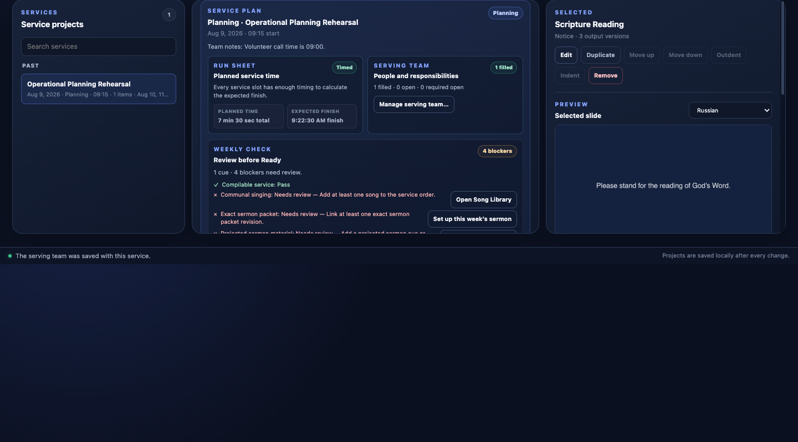
This production-path capture shows contextual repair buttons on the current Weekly Check, not a static mockup. The same run proved all six blank-service destinations were navigation-only and that a detached old-revision action refused without changing canonical project content or the stored SHA. It does not prove a packaged app, existing-sermon branches, phone Remote, physical outputs, volunteer operation, or church use.
Capture: 294,715 bytes · SHA-256 ad355031…f756
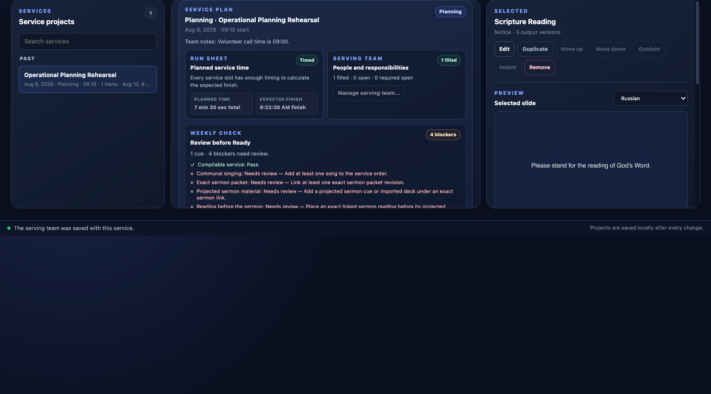
This is the actual production-path verifier capture, not the explanatory graphic beside it. The saved project was reopened before verification. It proves current-source Planning and persistence, not a packaged build, live cue navigation, physical outputs, or venue use.
This deterministic graphic uses the exact vocabulary and values covered by the current 110-of-110 integration slice. The preceding card is the real production-path Electron verifier capture for the same workflow, including fresh-profile persistence and screenshot integrity. This card remains a simplified companion illustration, not a second live-app screenshot, packaged-build proof, or venue claim.
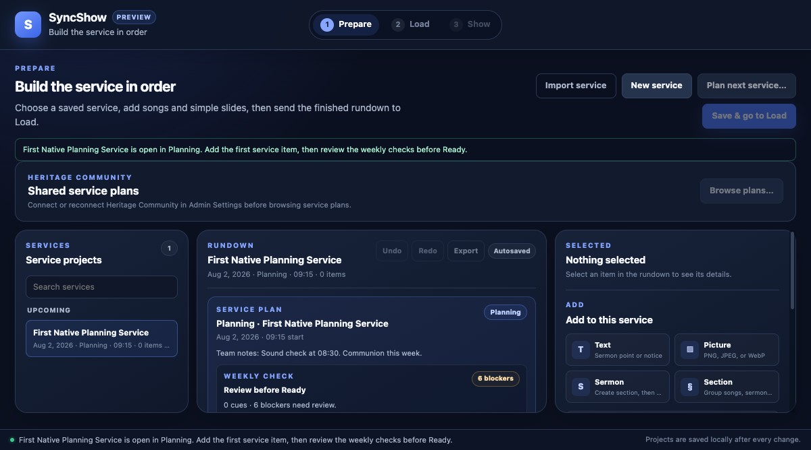
This is the actual post-save control window from the automated isolated verifier—not a static fixture. New service passed through the production renderer, preload, Main validation, and project store; revision 1 was reopened from disk before the capture. The schedule and team notes are visible, all six empty-service checks correctly block Ready, and Save & go to Load remains disabled. The disposable profile was removed after verification. This proves the source workflow and persistence, not a packaged build, physical display, or venue rehearsal.
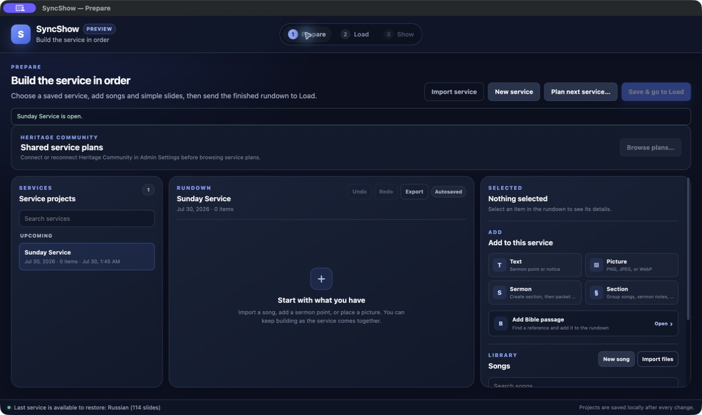
This current-source capture uses a confined disposable profile. The blank native rundown exposes Sermon as an ordinary first-class action; no deck conversion, user profile, or Community server was touched. It is renderer interaction evidence, not a packaged-app, output-window, or venue claim.
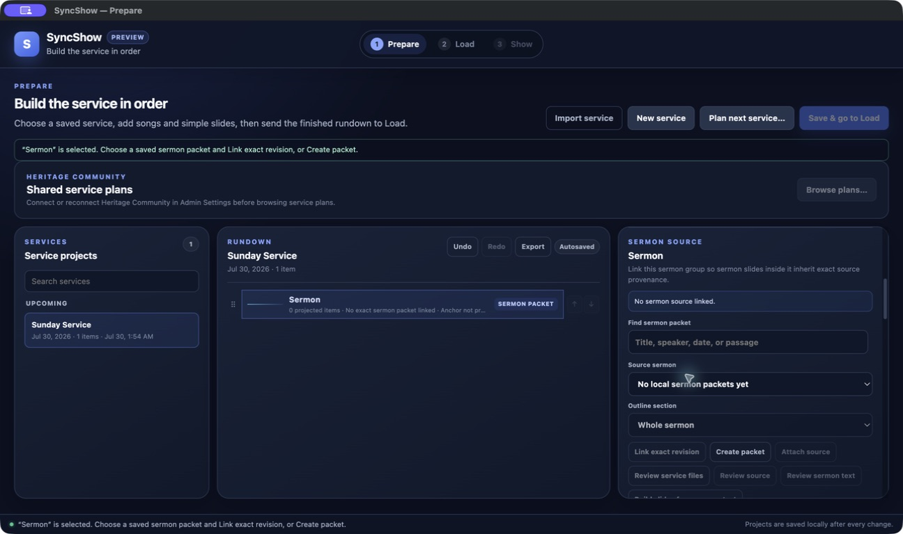
The click created one non-projected sermon section, selected it, enabled Undo, and exposed the existing exact packet workflow. The source-Electron run changed only its isolated profile and made no PowerPoint or Community write.
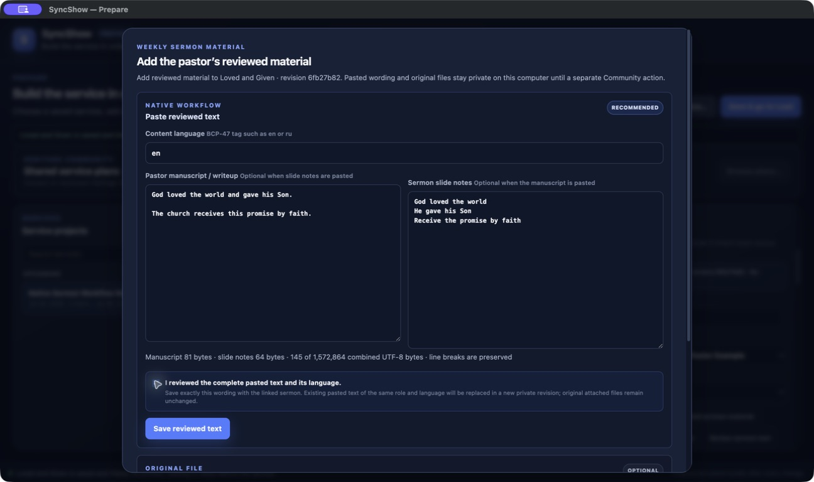
After the packet and John 3:16–17 reading were created, SyncShow opened this screen automatically. The operator reviewed the exact manuscript, slide notes, language, and byte bounds. Original-file preservation remains a separate optional section below; no PowerPoint or Community connection was required.
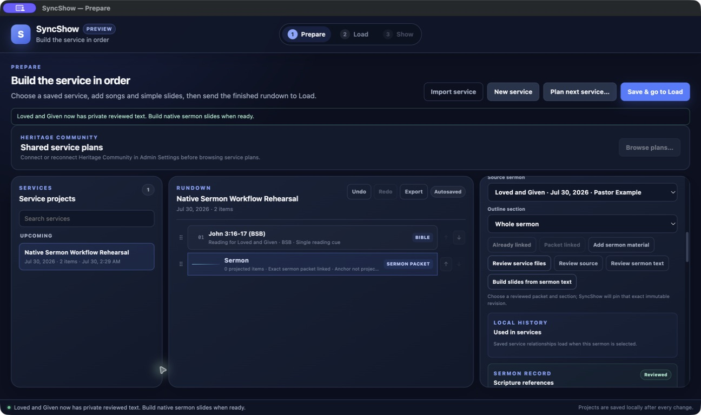
This intermediate capture closes the gap between the paste dialog and cue construction. The exact sermon reports private reviewed text and exposes Build slides from sermon text, while the linked reading and sermon packet remain in the saved rundown. It is current-source persistence evidence, not Community publication.
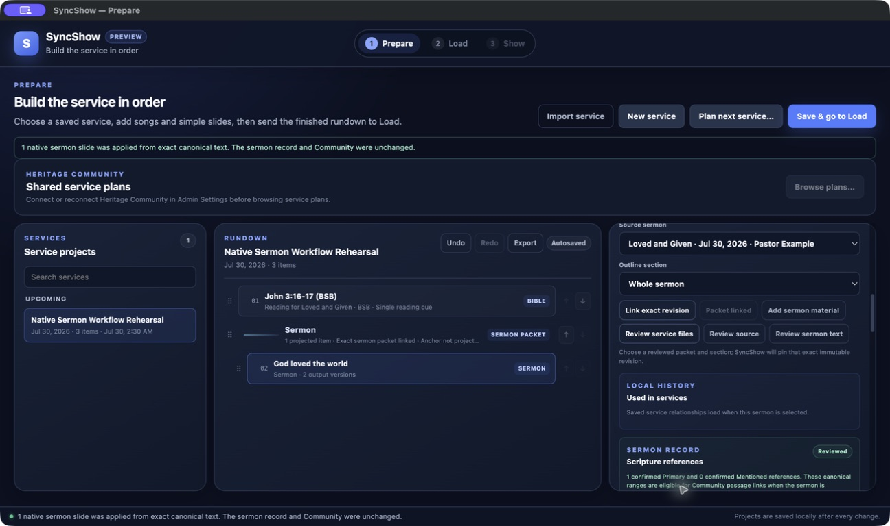
Explicit output mapping and paragraph placement produced one native sermon cue inside the exact linked group. The status confirms that the canonical sermon and Community were unchanged. This used a disposable profile and proves the control workflow, not a packaged or physical-display rehearsal.
This deterministic read-only fixture mirrors the implemented Prepare vocabulary: pinned exact song, follow another output, current-plus-next lyrics, per-output BSB/LSV, and Hidden. It also shows the explicit Singer text/blank/end states. It is a product illustration grounded in source and contract tests—not a live app, packaged build, physical-output screenshot, or server claim.
This deterministic read-only fixture illustrates the current native checkpoint: replace a retained song in place, then review canonical sermon paragraphs into editable native cues with explicit Exact, human-authored Condensed, or Hidden output treatments plus Insert/Update/Skip decisions. It shows source/projected evidence without changing the canonical sermon. It is not a live Electron capture, packaged-app exercise, screenshot of a deployed server, or venue proof.
This deterministic fixture uses the actual read-only local ServiceSet shape—112 aligned English, Russian, and Media positions—to illustrate the preserved source-faithful picture-draft bridge. It is not the primary authoring direction, a live dialog, or deployment evidence. No new PowerPoint processing was added in this checkpoint; this is retained as historical fallback evidence. No draft or Show was changed while gathering it.
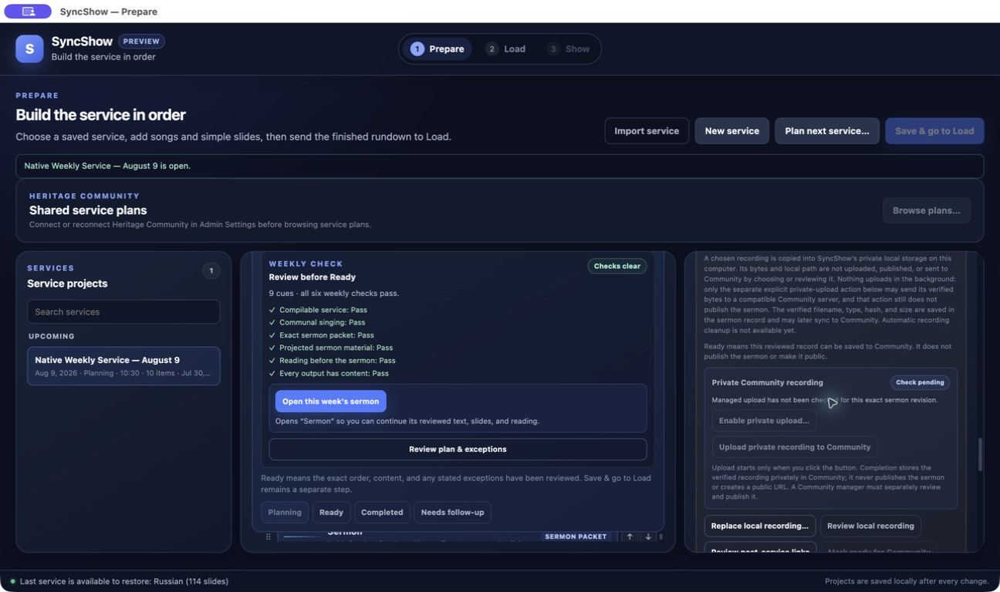
This July 30 capture comes from the current Main, preload, and Prepare renderer in an app-enforced isolated profile. A tiny disposable MP3 passed through the real file picker and private local recording store for the exact native sermon. With no Community connection in that profile, the managed card honestly remains Check pending: upload actions are disabled, local review remains separate, and no network write or publication occurred. The walkthrough also exposed a null-state song-library renderer defect; the capture shown here is after the focused fix and its 10-of-10 regression pass. This is real desktop evidence, not a packaged-app, retained-upload, public-media, audible-playback, or venue claim.
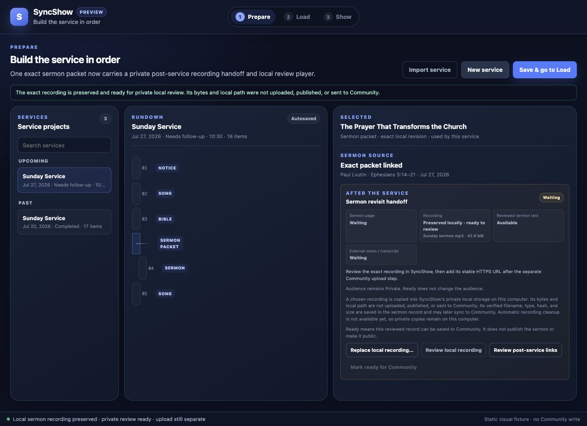
This deterministic fixture illustrates the completed contract: one exact linked sermon can show a locally preserved recording, expose its private local-review control, keep path and private-store identity out of the control renderer, and leave network preservation as a separate explicit post-service step. It predates the new managed-upload controls and is not being presented as their screenshot. The image is not a live Electron capture, open player, packaged-app exercise, audible-playback proof, Community write, or deployment claim. Local intake/playback evidence is the focused 52-of-52 slice, the real 478,536-byte MP4 store smoke, and a separate real-Electron bounded stream of 1,668 bytes into a sandboxed audio element. The real client picker, local store, and disconnected managed-recording card are shown in the source-Electron capture above. The transfer/finalization/backup contract remains proven by 61/61 SyncShow and 29/29 + 9/9 Community checks. Its exact server build has since passed isolated appliance rehearsal and deployed on WOTBC; this older static fixture still makes no live-upload claim.
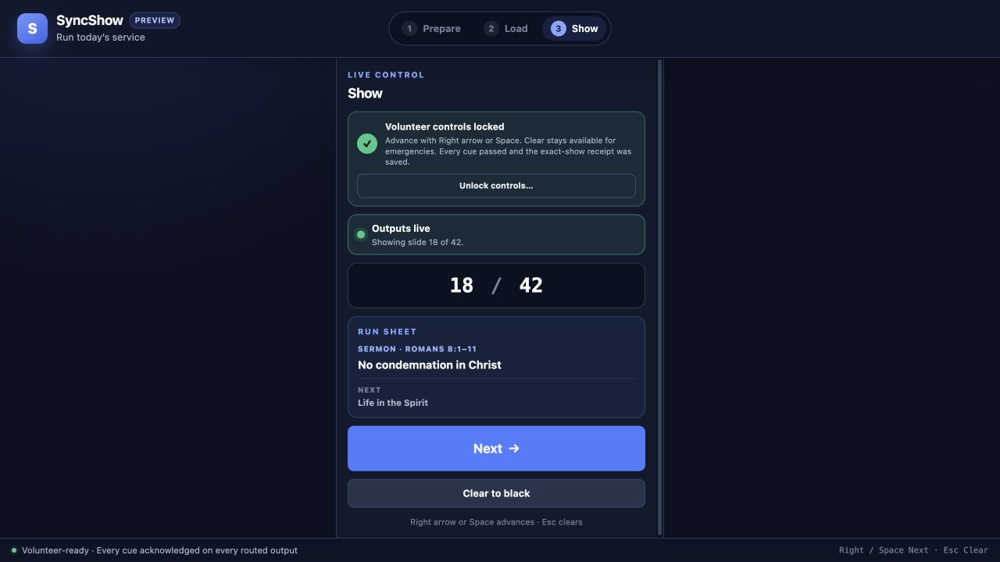
This is a faithful static rendering captured from the current SyncShow renderer markup and CSS. It is not a live Electron, physical-output, phone, or venue screenshot. The reproducible fixture illustrates the locked surface after every cue has been acknowledged on every routed output; the authority and receipt guarantees remain covered by focused Show contracts. The previously recorded baseline was effectively 2,036 of 2,036 tests: 2,033 passed in the managed sandbox, and its three denied loopback-server cases passed separately with normal listener permission. The current complete suite is reported in the proof ledger above.
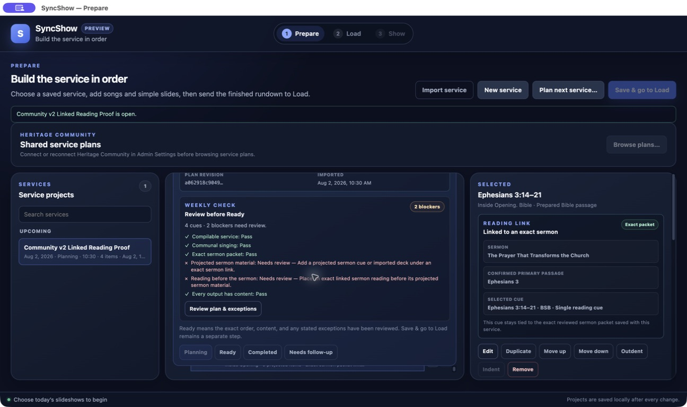
The selected item explains the human relationship—sermon title, confirmed primary passage, BSB cue, and exact-packet status—without exposing raw identifiers. The two visible blockers are intentional: this proof fixture omits projected sermon material.
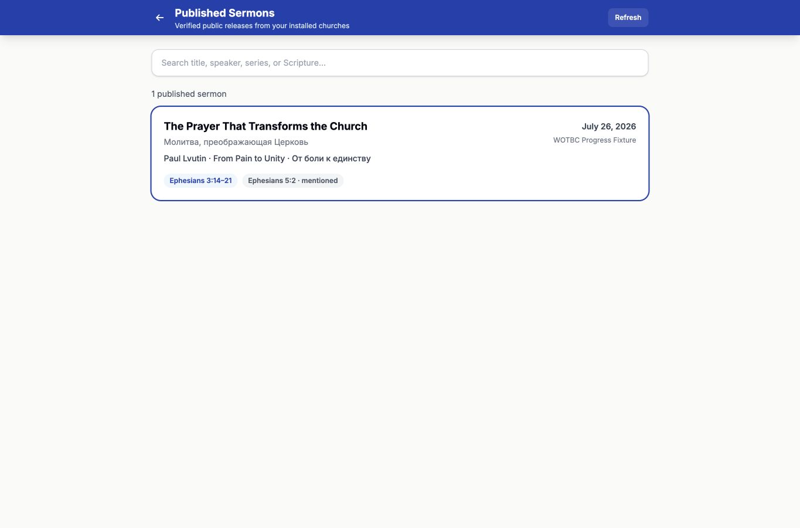
This deterministic local fixture proves the new strict archive UI. It is not a claim that the current WOTBC production URL is reachable.
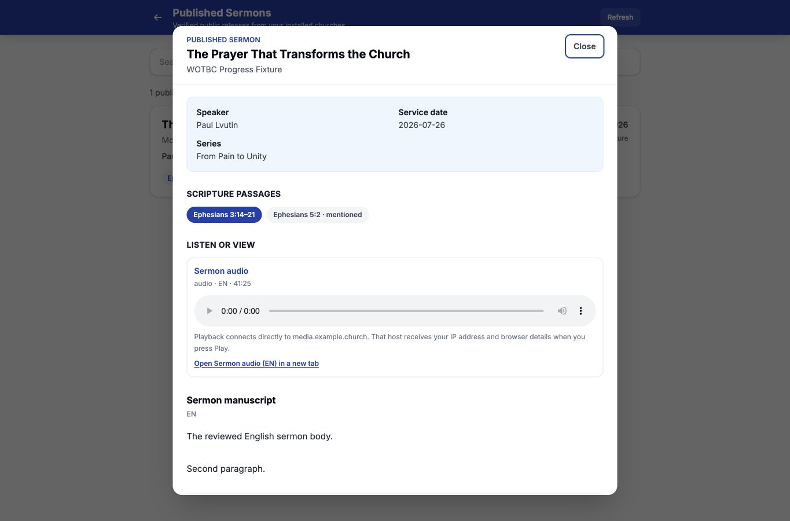
The stable detail route keeps Scripture roles, writing, and audio together. Audio remains user-initiated and names the external-host privacy boundary before playback.
Part of the exact 112-slide English deck exercised by the packaged weekly-service flow, alongside the matching Russian and Media decks.
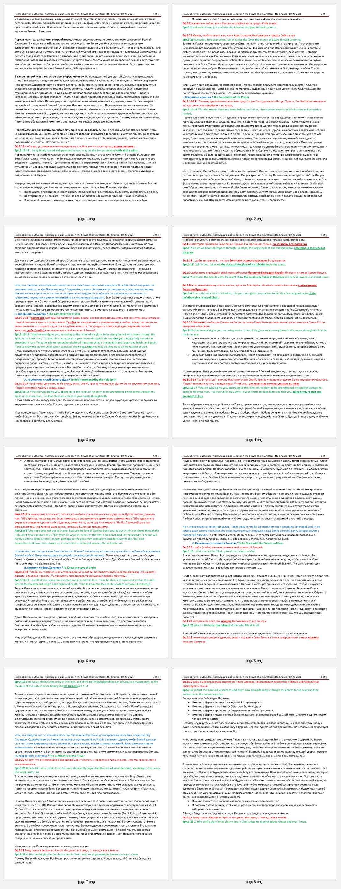
The guarded review identified the speaker, sermon title, and complete Ephesians 3:14–21 range while leaving the original file unchanged.
The deployed path is native-first and private-first. PowerPoint plays no role in this transaction. SyncShow can ask Community to review one exact current song family, Community owns the civil-day and membership decision, and ordinary edits revoke active member visibility instead of silently carrying an old review forward. A leader can now also prepare a canonical sermon with its primary text and up to 64 other exact passages; those confirmed references are the source for later verse-level “Appears in” discovery. The private managed-recording server lane is now enabled after an exact image-pinned database migration and rollback rehearsal. Its live public surface advertises the upload contract and rejects anonymous writes. Two attempted public cancel rehearsals stopped before upload, preserved sealed failure evidence, and left the marker graph and private volume empty. Their exact v3 replacement is audited but not yet executed because fresh approval is required. WOTBC has not finalized or published a recording. The separate audit-green manager playback/download patch is not part of this deployed WOTBC build. Neither is the locally integrated Phase-2 public-binding and byte-serving source.
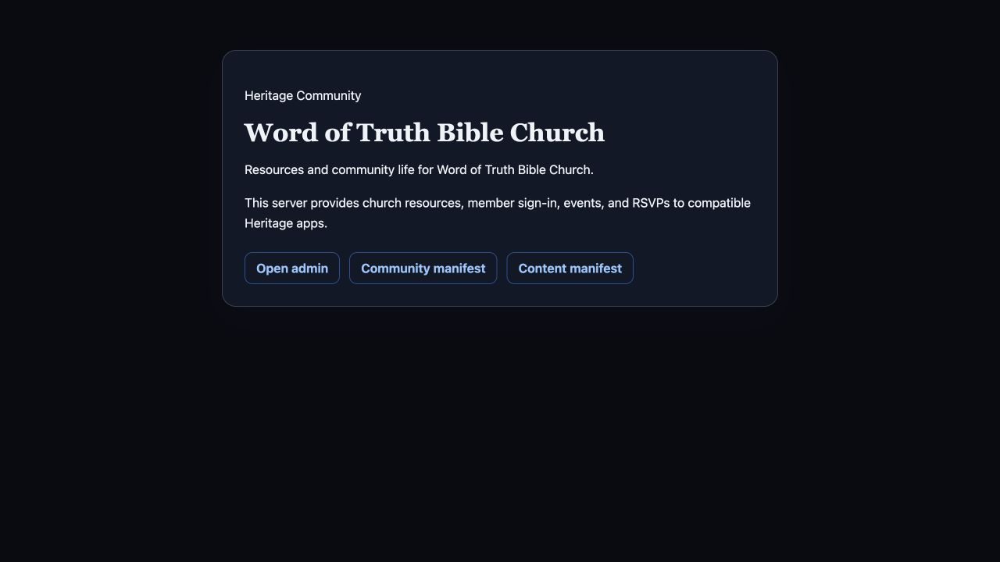
Recaptured after the managed-media deployment at
https://wotbc.heritage.faith/. The landing page and
both manifests render through the unchanged Cloudflare tunnel;
the linked public Community manifest now contains the bounded
sermonMedia discovery resource.
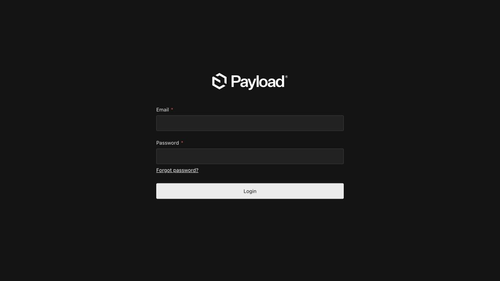
The admin route renders successfully without exposing an account, token, private lyric, or member detail in this report.
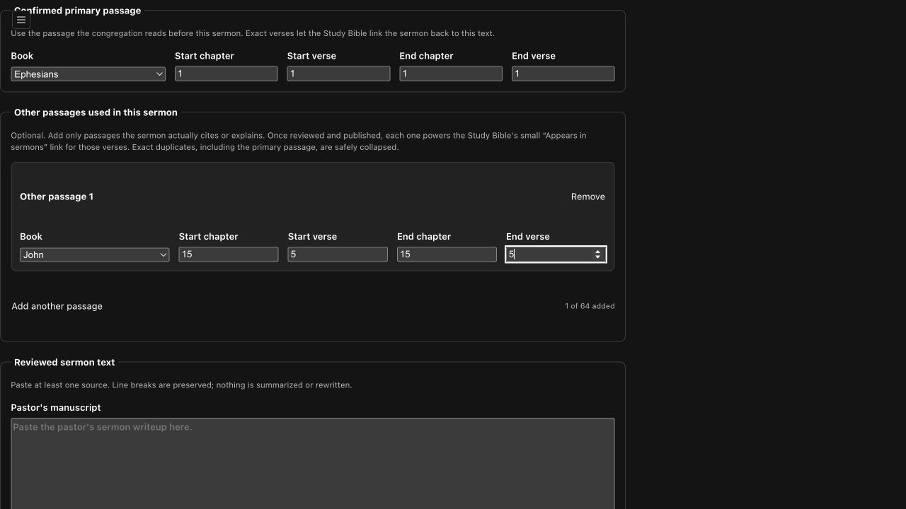
The deployed manager form added John 15:5 as a bounded mentioned range and displayed 1/64. The later expired-session refusal created no record, so this is authoring-surface proof—not a live publish-to-reader claim.
August 10 managed-media deployment
8c16784ba1d2e2be6be849f81892ebc2fff2ae3bc3dc4928c6adf35f61da79b5codex/wotbc-sermon-media-exact-8c16784ba1d2-v2d69deadbaf1916d1d0a5927bc135ea1acddda67esha256:ac475dace249061139a62d4254fac5f57bde74274e66d73cea08d570f57e908asha256:093c126ca0cd7f62bc84d1db5e6b06a9371d9ec7470280ec842330fec870a88d/opt/heritage-community/backups/backup-20260810T223744Z-pre-update5|20260730_230000_sermon_media_staging|16|180d5677f067688ffa6609fed0f9972248e7189958a74f9d6e3498b8932184e6392b43981-360b-4aea-a070-53659eb2903b · sequence baseline stopped before administrator creation; exactly two pre-existing expired sessions were removed before the declared baseline, and an independent read-only audit found zero smoke residued8e07f03-0ec3-4f27-850c-542447499e6d · quoted dotenv stopped before administrator creationa63d7c7d86e714a345abe91d03c8002114a98689acdef691b9ed64e74a1247e9 · not staged or executedd3ed272cb3d64ab33f8bc1a6efb991a68fd5a99d3bc6c3db1106a96d92316a28Two independent post-deployment audits matched the source, Git index, runtime image IDs, migration state, backup contents, private-volume layout, public discovery, app/database health, and unchanged tunnel. The format-2 backup was restored into an isolated temporary database and proved the exact legacy state before that temporary database was removed.
Earlier July 30 sermon-passage deployment
86612976988a98d80a757dfb473d7297c90e6b9bad9bd5be94ea4eb0eb4c9a8a889fa244b7ca4821751ec469a6609ded62fd63628443eb940f8017e69f13f1d1106ed74d643d9637dbc095ae8172b7048da3351197ee45a6abdefff1a8ee9368codex/wotbc-sermon-mentions-889fa244b7ca3e2bc01d60f3bc5da91628930569bcf9808ec626sha256:0313d6e82a4392cf29bec263956ce29b248f31938785da62d32d533bec3a2a8d/opt/heritage-community/backups/backup-20260730T214942Z-pre-sermon-mentions/opt/heritage-community/backups/backup-20260730T215036Z-pre-updated45deee48bf5208b4286020b3f3e8586c43979f950be9323ef589dff7babd5ed
The earlier member-sharing rehearsal caught and corrected three real failures before
promotion: enum/text migration comparison, an unbounded invalid
legacy-family error, and hidden receipt fields missing from internal
server reads. The final catalog verifier also follows each summary’s
content URL to its signed-in detail because catalog summaries
intentionally omit syncId. All disposable rehearsal
grants, sessions, magic tokens, and saved credentials were removed.
The newer sermon rehearsal used an isolated production-data copy and
removed its disposable records. One transient Resend DNS warning was
non-blocking because the exercised path required no email.
The final walkthrough ran against the separate loopback-only WOTBC candidate. The leader form worked, record 3 became a private Ready canonical sermon, and the service-plan picker selected that exact record without error. The candidate had all 14 migrations. At the time of that walkthrough, the production-named stack and its data were unchanged; its current state is now documented separately in the verified deployment section above.
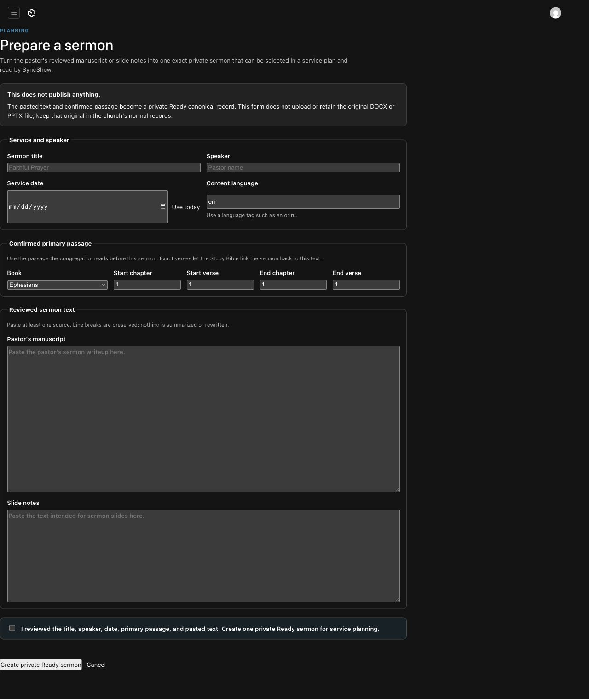
The live candidate clearly separates preparation from publication and collects the exact date, passage, manuscript, slide notes, and human review confirmation.
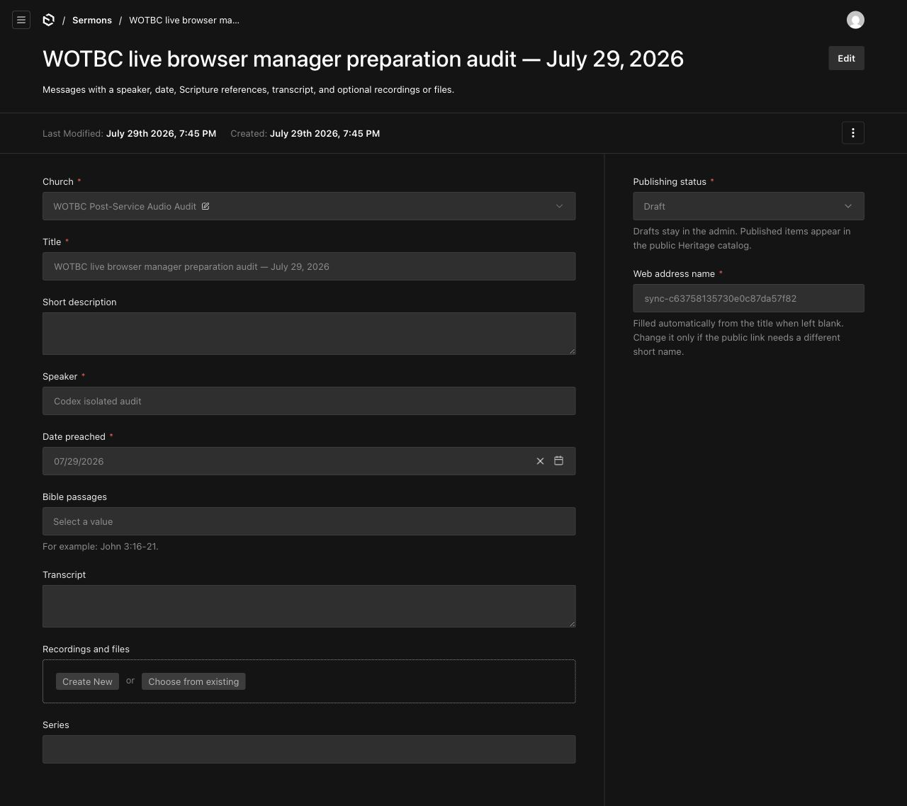
Browser-created record 3 retained the correct July 29 civil date. Its canonical state is private and Ready, while the visible public publishing field remains Draft—nothing was published.
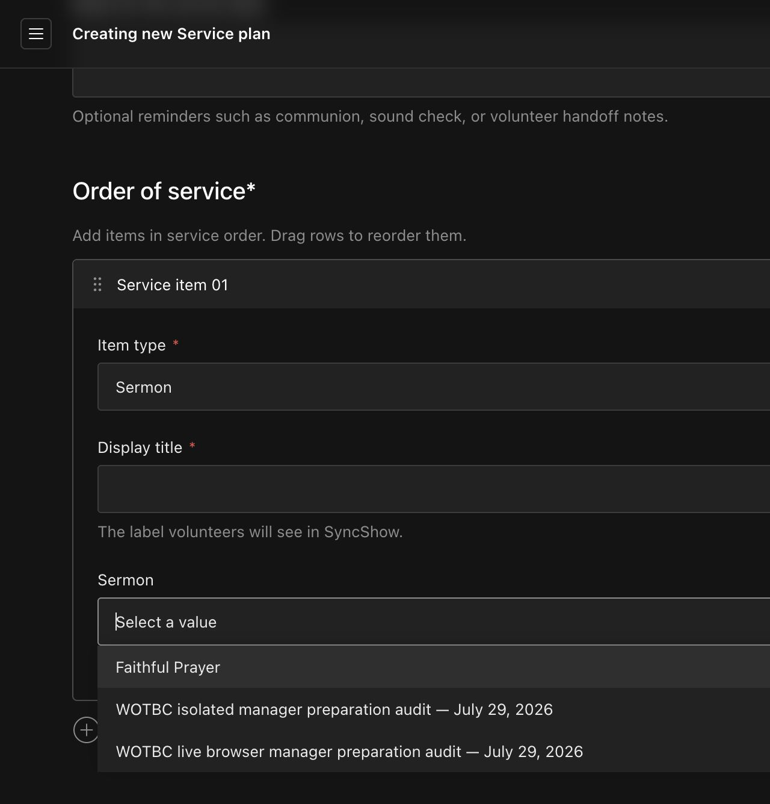
The menu listed exactly three canonical non-archived rows. “Faithful Prayer” correctly appears because it is canonical and published, not a legacy record. The audit then selected record 3 without error.
The picker query needs the canonical identity and archive fields on
the server, even though ordinary managers should not edit them. The
correction makes only syncId and
syncArchived hidden in the admin interface instead of
hiding them from server reads. The final browser pass then returned
exactly the three eligible rows and selected record 3 cleanly.
8613941073cb8acaf9b53a61ad52003fc4f3f5ff9c57c95b72cd3f9a76cd8008
e8f98ed399cd317d8cad7f3e36480a09748f9b62e3fd6c2b52f901a97911220f
41663bf0873752b94f47da57dd61073c2f9227a50f8f70dbcee330bc461116a7
Current boundaries
Keeping these visible is part of making the product trustworthy.
Both integration branches remain dirty and unreleased. Preview 18 was merged historically but never produced a tag, release, or assets.
The authorized appliance now runs the versioned sermon-mentioned- passages build on top of the member-sharing slice, and all route, data, backup, and tunnel checks pass. Its 31 legacy songs are intentionally draft/private with zero active receipts until each exact family receives a fresh rights review; it currently has zero sermons. The live form visibly accepted one other-passage row, but its expired session failed closed before a disposable save. This does not prove regular manager use, member onboarding, an authenticated publish-to-reader round trip, a weekly rights-review habit, or Sunday operation.
The repository's retained dist/ installers still
predate today's source, but a separately frozen successor macOS
arm64 directory app now has exact byte, signature-integrity,
native-runtime, private-0700 Fontconfig, PDF/Sharp, legal-evidence,
and same-Mac Remote proof. Automated packaged Planning → Ready →
Load, clean close, and a second clean same-profile launch all
passed; the restart restored the identical Ready revision and
nine-cue package while Show stayed idle. A later exact-package
Show/Finish instrumentation attempt never loaded its fixture
because Electron filtered the external --require;
the app stayed open until the verifier timed out and then cleaned
up normally. The corrected verifier now rejects that unsupported
route before package launch and verifies the relevant bytes
unchanged. These are harness-boundary records, not a product hang
or Show/Finish proof. It remains an
ad-hoc-signed QA bundle—not a clean-commit or published release;
this exact bundle was not notarized or installed and has no Show →
Finish, Intel, Windows, Linux, full operator-lifecycle,
phone/browser, physical-display, or venue proof.
The first and carried service paths now share date, start time, team notes, ordered native content, readiness, lifecycle state, per-item timing, calculated finish, and structured service/item responsibilities. The serving record is intentionally a bounded service brief, not a member directory: it has no invitations, availability, recurring rotations, contact information, notifications, or organization-wide scheduling. Nothing is guessed from free-form notes. The current-source Electron capture and persistence path now pass; packaged weekly use, church practice, and venue operation remain separate gates.
Real displays, native Show across supported platforms, phone Remote, church Wi-Fi, firewall behavior, and a real volunteer rehearsal are not yet proven. Windows PowerPoint/LibreOffice parity remains a separate legacy-fallback regression gate when that path changes. The volunteer-control image above is deliberately static renderer evidence, not a venue claim.
The native renderer v8 source-runtime matrices now pass at both the supported 640×360 minimum and standard 1920×1080, including the generated sermon reading as exact bundled BSB on Front, exact bundled LSV on Translation, and blank on the hidden Singer output, plus one sermon cue as exact canonical text on Front, human-authored condensed text on Translation, and Hidden on Singer, and the derived Singer text/blank/end states. Their deliberate oversized-text probe still fails closed. This particular renderer/navigation matrix remains hidden source-Electron evidence: it has not been repeated from the packaged app, and physical routing, venue operation, and volunteer use are not yet proven.
SyncShow now reconciles the imported baseline, current local work, and newer exact Community plan with explicit conflict choices, compare-and-swap protection, orphan pruning, and a durable hash-bound receipt. The compatible server code is deployed, but this exact plan-reconciliation path has not yet completed an authenticated deployed manager round trip, packaged restart/reopen, or real weekly-service rehearsal.
Renderer 8 intentionally rejects renderer-7/schema-2 prepared packages instead of guessing a migration. After upgrading, an operator must open the service in Prepare and publish it again once before Load. The underlying service project remains the source of truth; legacy PowerPoint operation is separate and unaffected.
The canonical civil date now projects to noon in the locked Community IANA time zone and round-trips even in Auckland and Kiritimati. Payload's generic admin date cell can still display in the browser's time zone, so absolute global UI consistency needs a custom date-only renderer.
The preserved legacy picture draft uses verified rendered images, so imported contents remain flat pixels. Further PowerPoint processing is postponed, and this checkpoint added none. The product gate is a complete ordinary weekly service authored, published, rehearsed, and run in SyncShow's native format.
Community manager Publish and Withdraw actions do not send a live event to SyncShow. The explicit selected-sermon refresh re-reads bounded publication state and clears the previous live Verify result, but it does not pull canonical sermon bytes. A schema-2 direct-recording publication therefore still needs the ordinary exact sermon pull/conflict path before local artifact verification can use its server-authored revision.
SyncShow’s exact Ready/Published gate and trusted-origin opener pass 46/46 focused checks. Heritage’s exact query parsing, authorized-list resolution, and visible refusal behavior pass 14/14 behavioral checks, 3/3 static checks, and type checking. The Heritage side is now on WOTBC, but no packaged SyncShow manager-to-public-reader round trip is claimed.
The fixed vector matches the current Heritage schema-1 manager transition and public projection in a 30-assert read-only cross-runtime check. Heritage's schema-2 direct-recording path changes the canonical document during publication and still needs its own portable vector. The verifier still needs a checked-in Heritage transaction mirror and disposable-PostgreSQL rollback gate. No WOTBC sermon was published for this checkpoint, so deployment is not being mistaken for publication proof.
SyncShow locally preserves MP3, M4A, or MP4 and can privately upload the MP3/M4A subset in resumable 8 MiB chunks. Durable 202 finalization, restart/local-loss recovery, and explicit cancellation are implemented. A private manager inventory, playback, and download screen is now applied and reverified in the authoritative local checkout, but it is not committed or deployed. The locally integrated Phase-2 source implements explicit schema-3 selection, locked managed-object publication binding, and canonical public GET/HEAD/range serving with withdrawal-driven no-store/404 authority; it passes 47/47 focused and 285/285 full-suite checks plus nonincremental type checking and clean copied-source builds. It is not committed, live-database/browser/proxy exercised, or deployed, so WOTBC still has no public serving route. No transcoder or automatic retention policy exists. Completion means privately preserved. The earlier exact server build is enabled on the WOTBC test appliance after the isolated DB15→16, backup/restore, immutable- image, health, and public-discovery gates passed. No recording has been finalized or published there. Two public cancel attempts failed closed before upload and left zero residue. The remaining exact v3 transfer proof is deliberately disposable, separately audited, and waiting for fresh execution approval.
Format-2 backup and restore now verify the exact finalized-object and database inventory and reject active, corrupt, or partial state. The appliance still keeps nightly backups on its own disk by default and retains full recording copies without deduplication. Real use requires regularly tested encrypted off-device replication and a deduplicated retention policy.
This report was grounded in the current repository documentation, package proof, source files, deterministic fixtures, focused and full tests, and time-scoped isolated live-audit records.
{kind=link}
{kind=link}
{kind=link}
{kind=link}
{kind=link}
{kind=link}
{kind=link}
{kind=link}
{kind=link}
{kind=link}
{kind=link}
{kind=link}
{kind=link}
{kind=link}
{kind=link}
{kind=link}
{kind=link}
{kind=link}
{kind=link}
{kind=link}
{kind=link}
{kind=link}